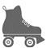
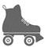
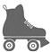

LONG
BEACH, CALIFORNIE
Ma chère maman,
Tout va bien. Toujours autant à faire. Suis passée l’autre jour à Sweetwater, le temps de partager avec Sophie et Gertrude ces bonnes choses que tu m’as envoyées. Tu es vraiment la reine des fourneaux. Les filles dans leur chambrée avaient soudain beaucoup d’appétit, pour tes donuts, surtout. On leur en a donné quelques-uns et Gertrude a planqué le reste.
Sophie ne veut pas que tu t’inquiètes, mais elle est un peu patraque. Elle a dû attraper quelque chose, il faut qu’elle se repose un petit moment. Ce n’est pas à moi que ça arriverait, n’est-ce pas ? J’aimerais bien pourtant rester au lit quelques jours, et que tout le monde s’occupe de moi. Elle en a, de la chance. Le médecin dit qu’elle va récupérer en un rien de temps, elle sera vite sur pied.
Gertrude ne te dira rien, mais elle a été sélectionnée pour partir à Camp David. Elle va faire du remorquage pour les exercices de tir de la DCA. N’aie pas peur ! Ils ne tireront pas sur son avion, mais sur les cibles qu’elle traînera derrière elle. C’est du travail d’artiste, et ils ont choisi les meilleures. Je file, embrasse Poppa pour moi.
Fritzi
PS : Ça doit être la cuisine mexicaine qu’on mange en Californie, mais tu seras ravie d’apprendre que j’ai grossi. Si ça continue comme ça, on va bientôt me prendre pour Gertrude.
LONG
BEACH, CALIFORNIE
Mon Billy,
Je viens d’apprendre qu’on va se croiser. Le 14, je descends un B-24 Liberator à Biloxi, et j’ai quelques jours de congé avant d’en rapporter un autre à Long Beach. On devrait pouvoir en profiter ensemble. Je sais que tu as du boulot, mais moi, j’ai besoin de te voir, mon grand. Réponds vite.
Fritzi
À LA CREVETTE BUBBA GUMP
Sookie et Shapiro avaient rendez-vous dans la salle du fond au restaurant de crevettes Bubba Gump, sur la baie, près d’un port de pêche. Arrivant la dernière, Sookie s’assit et demanda d’un air gêné :
– Docteur, ce serait vraiment déplacé de commander quelque chose à manger ? Je ne sais pas si c’est compatible avec une consultation.
– Mais non, aucun problème. Mangez ce que vous voulez.
– Ah, merci. J’ai travaillé au jardin toute la matinée, j’ai laissé passer les heures, je n’ai rien avalé, pas même un café, et je meurs de faim. J’ai juste eu le temps de m’habiller.
La serveuse leur apprit que, malheureusement, il était trop tard pour petit-déjeuner.
– On sert le repas de midi, maintenant, dit-elle à Sookie. Tenez, voilà le menu.
Sookie jeta un coup d’œil. Bien sûr, c’était un restaurant de crevettes, et donc il y avait des crevettes, mais comme elle en avait fait la veille, elle commanda des huîtres frites, des beignets de courgette, et quelques autres légumes frits. Avec une portion de coleslaw.
Comme d’habitude, Shapiro se contenta d’un déca. Il ne s’était pas fait à la cuisine du Sud américain. Il est vrai qu’ici tout baigne dans la friture.
Sookie attaqua ses huîtres avec appétit et lui raconta ce qu’elle avait inventé pour impressionner Marvaleen.
– Franchement, docteur, je ne sais pas où je suis allée chercher des inepties pareilles. Je n’ai jamais fréquenté de marins, et encore moins des…
Au milieu de sa phrase, elle ouvrit de grands yeux et devint blanche comme un linge.
– Oh mon Dieu, dit-elle, il faut que j’y aille.
Sookie quitta son siège d’un bond et courut à toute vitesse aux toilettes.
Shapiro n’y comprit rien du tout et elle ne prit pas le temps de lui expliquer. Sookie, qui faisait face à la porte, avait soudain aperçu Pearl Jeff, l’amie de sa mère, qui arrivait avec un groupe d’amies. C’était, avec Lenore, la dernière personne au monde qu’elle avait envie de voir.
Sookie n’étant pas revenue au bout d’un quart d’heure, le docteur commença à s’inquiéter. Peut-être une huître qui n’était pas fraîche ? Si c’était une intoxication alimentaire, elle devait être sévère pour provoquer une telle réaction. Shapiro attendit encore un peu, puis il se leva et s’approcha de la table où le groupe de femmes venait de s’asseoir.
– Excusez-moi, leur dit-il. Mon amie est partie aux toilettes et j’ai peur qu’elle soit malade. L’une d’entre vous pourrait-elle me rendre service et aller voir si ça va ?
– Bien sûr, répondit Pearl Jeff, qui se munit de son sac et se dirigea vers les toilettes.
Les deux portes avaient chacune une inscription différente : « Goélands » d’un côté, « Mouettes » de l’autre. Pearl entra chez les « Mouettes ».
Sookie se cachait dans un box et reconnut aussitôt la voix de Pearl.
– Bonjour, dit celle-ci. Il y a une dame, ici ?
Comme on ne répondait pas, elle s’avança vers un box, sous la porte duquel elle avait aperçu deux pieds.
– Pardon, est-ce que vous allez bien ? dit-elle en frappant doucement. Le monsieur dans la salle se fait du souci.
Sookie, affolée, ne savait pas quoi faire. Faute d’une meilleure idée, elle tira la chasse d’eau plusieurs fois à la suite.
Deux minutes plus tard, Pearl Jeff vint retrouver le Dr Shapiro.
– Elle porte des tennis roses à pompons, votre amie ?
– Je crois, oui, dit-il, soucieux.
– Bon. C’est bien elle à l’intérieur, mais d’après ce que j’ai cru entendre, je ne crois pas qu’elle va ressortir tout de suite.
Embarrassé, il se demanda lui aussi quoi faire. Il ne pouvait quand même pas s’en aller. Alors il se rassit et attendit.
Finalement, quand le groupe de femmes fut reparti, il s’adressa à la serveuse, au comptoir, qui accepta à son tour de voir où en était son amie. Elle revint des toilettes avec un mot que Sookie venait de lui écrire sur une page arrachée de son carnet.
Cher docteur Shapiro,
Toutes mes excuses ! Je sais qu’il est trop tard pour reprendre la séance, et je vous expliquerai tout la semaine prochaine. Ne vous inquiétez pas : je ne suis pas malade.
La serveuse expliqua à Sookie que les dames avaient quitté le restaurant, mais elle avait peur de se montrer trop tôt. Peut-être discutaient-elles encore au parking ?
Lorsqu’elle pensa ne plus courir de risque et se décida à sortir, la salle était déserte. Son déjeuner avait refroidi et elle avait raté une consultation avec le Dr Shapiro. Sookie s’assit à sa table et se retint de pleurer. Malgré tous ses efforts, il n’y avait pas moyen d’y échapper : dans une petite ville comme Point Clear, être la fille de Lenore Simmons Krackenberry revenait à porter un bracelet électronique au poignet. Il y aurait toujours quelqu’un pour la reconnaître quelque part. Sookie avait souvent plaint la princesse Anne d’Angleterre. Pas étonnant qu’elle gardait l’incognito. Sookie savait très bien ce qu’elle ressentait.

TRISTE
JOURNÉE
LONG
BEACH, CALIFORNIE
1944
Par un mardi d’octobre, Fritzi était de retour à Sweetwater et salua tout le monde comme d’habitude.
– Bonjour, mesdames ! J’ai une faim de loup. Quand est-ce qu’on…
Voyant ses camarades baisser la tête, elle ne finit pas sa phrase. Quelques-unes semblaient avoir pleuré.
– Qu’est-ce qui se passe ?
Une enveloppe était posée sur le lit de Fritzi, que Willy lui montra.
C’était une circulaire de l’état-major des armées à Washington. Fritzi la déplia. Le général Hap Arnold annonçait que le corps des WASP serait démobilisé le 20 décembre prochain.
– C’est une plaisanterie ? demanda Fritzi, ahurie.
– Non, lis jusqu’au bout.
Elle s’assit et poursuivit sa lecture : « Vous avez répondu présentes dès que le pays a eu besoin de vous, et les états de service des WASP sont remarquables. Blablabla… »
Fritzi passa directement à la fin.
« Mais cela n’est plus aujourd’hui la même guerre qu’au début, et votre aide en tant que volontaires n’est plus requise. Si nous devions maintenir vos missions, au lieu de libérer nos jeunes pilotes, vous prendriez en fait leur place. Ni vous ni moi ne le souhaitons, bien entendu. Blablabla. Veuillez accepter, mesdames, mes remerciements les plus sincères, bonne chance pour la suite, et que les vents vous soient toujours favorables. »
Ce jour-là, la circulaire avait été distribuée à toutes les WASP, réparties dans quatre-vingt-dix bases militaires sur le territoire américain.
Apparemment, des milliers d’instructeurs de vol, civils et masculins, avaient été exemptés de service pendant qu’ils formaient les pilotes militaires. Mais l’armée disposait maintenant d’aviateurs en quantité suffisante, et les centres de formation avaient tous été fermés. En revanche, on n’avait pas assez de soldats d’infanterie à envoyer se battre dans le Pacifique, et en Europe contre les nazis. Du coup, les instructeurs civils pouvaient être appelés sous les drapeaux, non pas en tant que pilotes, mais comme simples fantassins. Très rapidement, un grand nombre d’entre eux souhaitèrent remplacer les WASP pour pouvoir rester aux États-Unis.
Il faudrait en former beaucoup, et à grands frais, avant qu’ils soient capables de piloter les avions modernes avec lesquels les femmes étaient déjà familiarisées. Qu’importe, les hommes s’unirent et firent campagne pour s’opposer au projet de loi en discussion au Congrès, qui visait à donner aux WASP un statut militaire et les laisser poursuivre leurs missions.
On fit savoir au grand public qu’employer des femmes pilotes était contraire aux intérêts de la patrie, ce rôle étant dévolu aux hommes, et on leur suggéra, si elles voulaient continuer de servir leur pays, de s’engager dans les WAC ou de partir au front comme infirmières. Les Vétérans des guerres à l’étranger et la Légion américaine prirent fait et cause pour les messieurs, et le projet de loi fut rejeté. Cela impliquait que les familles des femmes mortes en mission ne recevraient aucune compensation et que, à la fin de la guerre, les WASP n’auraient pas droit, comme les autres soldats démobilisés, à des études payées, une formation professionnelle ou une année d’assurance chômage, ainsi qu’à différents prêts permettant d’acheter un logement et de démarrer une entreprise. Encore moins de soins médicaux, si elles en avaient besoin. Bref, absolument rien.
PENSACOLA, FLORIDE
Fritzi,
Je viens d’apprendre la nouvelle. Quelle injustice ! Et quelle bêtise ! J’aurais cru l’armée plus intelligente. Ça va lui coûter une fortune de former de nouveaux pilotes pour vous remplacer. Arnold me dit que toute cette campagne a été organisée par des gars qui veulent rester peinards à la maison, qui ont trop peur d’aller se battre. Ils ont écrit des centaines de lettres au Congrès, peut-être des milliers, sans compter celles de leur maman ! Quelle bande de dégonflés ! Mon pote Barry, qui a entraîné pas mal de WASP, trouve que les femmes sont formidables. Sauf que, pour certains, elles ont le défaut de ne pas être des hommes. Je suppose que le moral est bien bas, chez toi. Ah, qu’ils aillent se faire voir, ces imbéciles. Va boire un verre ou deux, même quatre ou cinq, si tu veux. Et sache que je serai toujours de ton côté.
Je t’aime, ma grande.
Billy
Billy ne lui avait jamais dit qu’il l’aimait, et Fritzi avait grand besoin d’une déclaration d’amour. Il lui mettait du baume au cœur. Pour ce qui est des verres, elle suivit son conseil.
DES
VENTS
FAVORABLES
Le 17 décembre 1944, Fritzi atterrit une dernière fois à bord d’un bombardier quadrimoteur et, avant de s’éloigner, elle tapa gentiment sur le fuselage.
– Salut, ma vieille, lui dit-elle. Tu es une sacrée belle chose.
Le 20, toutes les WASP dispatchées sur le territoire étaient rappelées à Sweetwater, où elles rendirent leur équipement : masques à gaz, lunettes d’aviateur, bottes et combinaisons de vol. Après quoi on leur offrit à dîner, avec une lettre de l’État, qui renouvelait ses vœux : « Nos remerciements les plus sincères, bonne chance pour la suite, et que les vents vous soient toujours favorables. » « Eh bien, tu parles d’une lettre d’adieu », pensa Fritzi. À la fin du repas, après avoir salué tout le monde, elle fit quelques pas sur les pistes, où elle trouva un avion aux réservoirs pleins, prêt à s’envoler. Puisqu’on la congédiait, elle se dit qu’on pouvait bien lui payer le voyage de retour.
Elle savait qu’elle était soûle, mais qu’importe. De plus elle avait commis une bêtise qu’elle ne se pardonnerait jamais. Maintenant qu’on avait dissous les WASP, qu’on n’avait plus besoin d’elle, elle se fichait un peu de mourir. Elle mit le contact, boucla sa ceinture, décolla et prit la direction du Wisconsin. Non qu’elle eût très envie de rentrer chez elle, mais elle n’avait pas d’autre endroit où aller.
Elle se posa trois ou quatre fois en chemin, et l’armée ne découvrit l’avion manquant qu’une semaine plus tard, rangé devant un hangar de l’aérodrome de Blesch Field, à Green Bay. Fritzi avait appelé un taxi pour la conduire chez elle. Elle avait un peu la gueule de bois, mais elle était arrivée entière. Détourner un avion militaire constituait un grave délit, cependant l’armée préféra ne pas engager de poursuites.
C’était de toute façon Pinks qui était chargée de l’inventaire à Sweetwater, et elle avait très bien compris. Pinks estimait à leur juste valeur les efforts qu’avait fournis son amie. Non seulement ceux de Fritzi, mais des autres filles aussi. Lui aurait-on demandé son avis, elle aurait déclaré que l’État aurait dû leur offrir à toutes le voyage de retour.
À la fin de la guerre, les dossiers concernant les WASP furent mis sous scellés, et l’on oublia pratiquement leur existence.
Il fallut attendre trente ans pour qu’une femme, à nouveau, pilote un avion militaire.

LA
VICTOIRE
PULASKI, WISCONSIN
1945
Le jour de la victoire des Alliés sur le Japon, un voisin sortit dans la rue en criant, les bras levés : « La guerre est finie ! » Aussitôt, les cloches des églises sonnèrent dans toute la ville, et les enfants coururent partout en tapant sur des poêles et des casseroles. On savait qu’une période venait de s’achever pour le monde entier.
Mais ceux qui, comme Fritzi, avaient participé à l’effort de guerre, poussèrent seulement un long soupir de soulagement. Pour elle, cela voulait surtout dire que Wink, vivant, rentrerait bientôt pour ne plus jamais repartir.
La guerre était finie, mais le coût était exorbitant. Plus de quatre cent mille Américains avaient été tués. Un million sept cent mille étaient blessés plus ou moins grièvement. La plupart des gens ignoraient que trente-neuf WASP avaient trouvé la mort. Seize infirmières militaires avaient succombé sous les tirs de l’ennemi, et soixante-sept autres étaient faites prisonnières – dont Dottie Frakes, qui devait rester internée plus de trois ans dans un camp de concentration au Japon.
Mais en août 1945, l’Amérique débordait de joie. On allait enfin pouvoir mener de nouveau une existence normale. Comme l’annonçait la une des journaux : « Hourra ! Rosie la riveteuse 18 redevient femme au foyer ! »
Mais bien des femmes n’avaient aucune envie d’être cantonnées à leur foyer. Fritzi voulait rejoindre Billy en Californie, reprendre du service avec lui avec les merveilleux fous volants dans leurs drôles de machines. Gertrude pensait trouver un bon salaire dans l’usine Ford de Willow Run, dans le Michigan. Sauf que, pendant l’été 1945, la compagnie Kaizer-Frazer racheta l’usine pour préparer l’après-guerre. Les femmes étaient exclues de l’opération, et les meilleures places réservées aux GI. En rentrant à Pulaski, Wink avait rouvert la station-service, et Angie, elle, était ravie de son rôle de mère au foyer. Gertrude avait besoin de se sentir utile. Elle chercha un poste dans l’aviation civile, où l’on n’engageait que des hôtesses de l’air. Lorsqu’elle se porta candidate, on lui apprit qu’elle était trop grosse, alors elle se résigna à enseigner l’accordéon à l’école Sainte-Marie.
18. Rosie the Riveter : icône de la culture américaine, symbolisant les six millions de femmes qui travaillèrent dans l’industrie de l’armement pendant la guerre.
SOOKIE
A
LE
BLUES
C’était empoisonnant de chercher chaque fois un nouveau restaurant, le choix se réduisait forcément, mais Sookie continuait de voir le Dr Shapiro toutes les semaines. Ces séances lui faisaient un bien fou, même si ce travail d’analyse, face à une autre personne, n’était pas toujours très facile. On prétend que la vérité libère, pourtant elle est souvent très déprimante. Sookie se réveilla un matin avec le cafard, et quand Dee-Dee vint la chercher pour déjeuner ce jour-là, sa mère était encore en robe de chambre.
– Entre une seconde, ma chérie, dit Sookie en ouvrant la porte. Excuse-moi, je n’aurais pas cru qu’il était si tard. En fait, j’aurais dû t’appeler. Je ne sais pas si j’ai envie de sortir aujourd’hui.
– Pourquoi ? demanda Dee-Dee.
– Oh, je ne sais pas. Je n’ai pas le moral. Ça t’embête ?
– Non, non. Qu’est-ce qu’il y a ? Tu es malade ?
Sookie s’assit en hochant la tête.
– Pas malade, non.
– Alors quoi ?
– Je ne voudrais pas t’ennuyer avec ça. Je pense trop, je réfléchis trop.
– À quoi ?
– Oh, des bêtises. À ma vie… Ce genre de choses.
– Elle n’est pas bien, ta vie ?
– Parfois, je me dis que ta grand-mère a toujours vu juste, en ce qui me concerne. J’ai deux mères fantastiques – dont une aviatrice, héroïne de guerre –, et moi, je ne suis qu’une vieille baudruche, dépourvue de courage.
Dee-Dee posa sur Sookie un regard incrédule.
– Tu rigoles ou quoi ? D’abord, du courage, tu en as toujours eu. Notre héros, c’est toi, tu es la plus chouette mère du monde.
– Tu dis ça pour me faire plaisir.
– Pas du tout. Tu te rappelles, quand on était petites, que le danois de papa était tombé au bout de la jetée ? Tu n’aimes pas spécialement nager, pourtant tu as plongé pour le récupérer. Tu ne te souviens pas ?
– Oui, si, peut-être. Mais c’est parce que ton père aimait cet idiot de chien.
– Et le jour où on est allés à Disney World, tu avais une peur bleue, et tu es quand même montée avec nous sur le grand 8.
– C’est vrai. Et je ne recommencerais pour rien au monde.
– Tu l’as fait pour nous. Tu peux dire ce que tu veux, mais il en faut, du courage, pour élever quatre enfants. Quand je pense à toutes les bêtises qu’on a faites. Regarde, moi. À l’évidence, je n’ai pas trouvé le bon mari, il a fallu que je l’épouse deux fois, et tu ne m’as jamais rien reproché, pas le moindre commentaire. Tu as toujours été là quand j’ai eu besoin de toi. Alors tu n’as pas le droit de dire que tu es une vieille baudruche. C’est complètement déplacé. Maintenant, je ne vais pas te donner une fessée, maman, mais tu vas te lever de ce fauteuil et t’habiller, parce que je t’emmène déjeuner. Tu m’entends ? Le monde nous appartient, et la vie est dehors !
Sookie étudia sa fille et sourit. Cette petite Dee-Dee, qui lui avait donné tant de souci, avait grandi sans qu’elle s’en aperçoive.
Comme demandé, Sookie se leva et alla s’habiller dans sa chambre. Elle ne put se retenir de rire. Dee-Dee n’était peut-être pas une Simmons à proprement parler, mais elle était bien la petite-fille de sa grand-mère. Le déjeuner était excellent et elles passèrent un très bon moment.

L’ANNIVERSAIRE
DE LENORE
POINT
CLEAR, ALABAMA
Janvier 2006
L’anniversaire de Lenore, qui tomberait bientôt, demanderait un minimum de préparation. Bien sûr, elle compterait sur sa fille pour organiser l’événement selon ses propres instructions.
Munie de son carnet, Sookie se rendit chez elle. Angel lui apprit à son arrivée que Lenore se trouvait au fond du salon, dans le coin bureau. Bizarrement, Lenore s’était déjà maquillée, mais elle était encore en robe de chambre. Assise à sa table, elle contemplait le vide d’un air désolé.
– Eh bien, que fais-tu là ? Je suis venue te demander comment tu voulais fêter ton anniversaire, cette année.
– Rien. Je ne veux rien du tout. À mon âge, il n’y a rien à fêter.
– Comment ? Qu’est-ce qui t’arrive ?
– Je suis très contrariée.
– Par quoi ?
– Oh, c’est affreux de vieillir. Regarde mon carnet d’adresses. La plupart de mes amis sont morts. Il n’y a plus personne pour me rappeler ma jeunesse, plus personne pour évoquer des souvenirs. Heureusement que vous êtes là, toi et Buck, sinon on ne penserait plus à moi. J’appartiens à un autre âge. C’est terrible de ne plus avoir d’avenir, ni de projets. Je m’étais dit que, quand vous seriez grands, tous les deux, je referais du théâtre, mais ton père est tombé malade, et j’avais tous ces clubs qui me réclamaient, je n’ai pas vu passer le temps. Puis, quand Alton a disparu, c’était trop tard. J’aurais de quoi écrire un livre, tiens. Ça s’appellerait Une vie de regrets, ou Tout ce que je n’ai pas fait. J’aurais pu accomplir tant de choses, pourtant. Il suffit que je m’y mette vraiment, et tout marche comme sur des roulettes.
– Oui, maman. Tu sais tout faire, et tu t’en sors mieux que tout le monde. J’ai parfois douté que ça te rendait très heureuse, en fait.
– Quoi ?
– Y as-tu vraiment trouvé ton compte ?
– Qu’est-ce que c’est que ces questions idiotes, Sookie ? Je t’aimais mieux quand tu élevais tes enfants. Maintenant, tu passes ton temps à réfléchir, et ça ne te réussit pas.
– Merci, maman.
– Heureusement que ta mère est là pour te dire la vérité. Tu sais bien que j’ai raison.
– Bien sûr, maman. Alors, que fait-on pour ton anniversaire, cette année ?
– Oh, je suppose que les enfants comptent dessus. Il ne faudrait pas les décevoir. C’est si important pour eux, et va savoir, je ne serai peut-être plus là, l’année prochaine ? Il vaut mieux organiser un petit quelque chose.
Sookie soupira et demanda :
– Combien de personnes ?
– Pas plus de trente. Je ne suis pas très en forme, tu vois bien.
– Trente. Bien, maman.
– Et si tu réserves à Lakewood, refuse absolument la petite salle.
– Oui, maman.
Lenore avait donc choisi Lakewood, et elle voulait la grande salle. La connaissant, Sookie savait que la liste des invités s’allongerait au fil des jours.
Sa mère était ainsi. Son anniversaire restait pour elle un événement important, et elle était persuadée que toute la ville l’attendait avec impatience.
En rentrant chez elle, Sookie pensa au sien, d’anniversaire. Le vrai, en octobre, qu’elle n’avait jamais fêté. Elle pensa aussi à cette femme dont le nom figurait sur son acte de naissance. Quelque part au loin, cette personne qu’elle ne connaissait pas devait se souvenir de cette date ?

FAIRE
CONNAISSANCE
POINT
CLEAR, ALABAMA
Sookie regrettait depuis longtemps de ne pas être plus proche de sa fille. Et voilà que Dee-Dee l’appelait maintenant chaque semaine pour lui proposer d’aller déjeuner quelque part. C’était si agréable de prendre le temps de faire mieux connaissance.
Elles étaient assises, cet après-midi-là, à une table en terrasse du Café Sandra.
– Je t’ai dit que j’ai fait encadrer les armoiries de la famille Poole ? demanda Dee-Dee.
– Je ne savais pas, non. Elles te plaisent ?
– Oh oui. J’aime mieux le doré que le rouge, finalement.
Sookie but une gorgée de son thé glacé.
– Vois-tu, Dee-Dee, je viens seulement de m’apercevoir d’une chose.
– Ah bon ?
– Eh bien, tu as du sang Poole dans les veines. Pas moi, qui suis seulement l’épouse de ton père. Vous êtes génétiquement plus proches. En revanche, ni toi ni moi n’avons du sang Simmons. Ce n’est pas bizarre ? Où est l’inné, où est l’acquis ? Les gènes et l’environnement. Qu’est-ce qui fait de moi ce que je suis, finalement ?
– Quelle importance, maman ? Pour tes enfants, ce qui compte, c’est ce que tu es maintenant. De plus, on vit en Amérique, et tu es libre d’être qui tu veux. Tu as le droit de changer ton nom, si ça te chante, si tu en as assez des Simmons et des Jurdabralinski. Tu choisis ce qui te plaît.
– Oprah Winfrey, par exemple ? dit Sookie en souriant.
Dee-Dee s’esclaffa.
– Non, mais tu peux t’appeler Lucille Flypaper ou Tiddly Winks McGee, cela ne posera de problème à personne.
– Sérieusement, ça serait marrant de devenir quelqu’un d’autre, juste pour changer. « Sookie », ça fait vraiment trop gamine pour une femme de soixante et un ans, tu ne crois pas ?
Elle piocha un instant dans sa salade en réfléchissant.
– Virginia Meadowood, dit-elle finalement.
– Comment ?
– Désormais, on m’appellera Virginia Meadowood.
– Oui, maman.
– Tu penses que je suis trop vieille pour repartir à zéro ?
– Mais non, soixante et un ans, c’est jeune.
– Ça serait bien de tout recommencer. Je m’y prendrais autrement, si je pouvais.
– À savoir ?
– Oh, je laisserais moins de choses me gâcher l’existence. Bien sûr, je tiendrais tête plus souvent à ta grand-mère. D’un autre côté, si j’avais été quelqu’un d’autre, je n’aurais jamais été Kappa et je n’aurais pas épousé Earle. Tu aurais eu un autre père, tu ne serais peut-être pas là, j’aurais peut-être eu quatre enfants différents. Difficile à imaginer. C’est terriblement déroutant. Pourquoi les choses sont-elles ainsi et pas autrement ? Étaient-elles écrites dès le départ ? Quand on commence à se poser ce genre de questions, on n’en finit pas.
– Oui, c’est très mystérieux. Bien sûr, si tu as envie de changer, de devenir quelqu’un d’autre, tu as notre soutien. Mais nous en avons parlé entre nous, et nous sommes ravis que tu aies épousé papa. On trouve que tu as toujours fait preuve d’une patience admirable avec nous et Lenore.
– Ah bon ?
– Et comment ! Tu as une fausse idée de toi-même, maman.
Une phrase que Sookie commençait à avoir entendue un peu trop souvent.
– Sans blague ?
– Je t’explique. Certes, grand-mère est extravagante, exubérante et tout ce que tu voudras, mais elle est un peu superficielle. Tu te sous-estimes et tu as tort. Tu as du courage, du cœur, tu es quelqu’un de beaucoup plus humain.
Sookie sentit l’émotion la submerger et les larmes jaillirent.
– Merci, ma chérie. Ce que tu me dis me touche profondément.
Elle appela Dena dans l’après-midi.
– Je vais te dire une chose. Quand le jour arrive où tes propres enfants te regardent avec d’autres yeux, où ils deviennent plus que tes enfants, mais des êtres à part entière, alors ça vaut la peine de supporter les rides et les kilos en trop.
UN
PAQUET
POUR ALICE
POINT
CLEAR, ALABAMA
Pete, le facteur, frappait à la porte de Sookie quand Lenore arriva avec un sachet de noix de pécan. Sookie ouvrit et les vit tous deux.
– Bonjour ! dit-elle.
– Bonjour, madame Poole, j’ai un nouveau paquet pour Alice Finch.
– Je le prends. Merci, Pete.
– Il y a un moment qu’elle est chez vous, maintenant. Elle doit se plaire, ici.
– Oui, bien sûr. Encore merci, Pete. Et bonne journée.
– Qui est cette Alice Finch ? demanda Lenore en entrant.
– Une amie.
– Mais encore ?
– Tu ne la connais pas, maman.
– Et pourquoi ?
– Parce que.
– Je connais tous les nouveaux habitants. Et je n’ai jamais entendu ce nom-là.
– C’est une amie de Marvaleen.
– Dans ce cas, je comprends. Pourquoi reçois-tu son courrier ?
– Il faut vraiment que tu saches tout, maman ?
– Absolument. Tiens, les noix de pécan que tu m’as demandées.
– Merci.
– Il te reste du café ? Celui de Conchita est tellement léger qu’on croirait boire de l’eau.
– Je vais en refaire. Je t’ai dit que j’ai parlé à Carter ?
– Non.
– Il a une nouvelle petite amie, mais il dit que ça ne durera pas.
– Je n’ai pas beaucoup aimé celle qu’il nous a présentée, la dernière fois. Trop bavarde et grossière à mon goût.
Sookie s’efforça de rester agréable, mais l’heure et demie qui devait suivre fut pour elle une véritable torture. Il lui tardait que sa mère s’en aille pour pouvoir enfin ouvrir son paquet. À peine la porte était-elle refermée qu’elle déchira l’emballage.
Chère Alice,
Voici quelques coupures de presse et diverses petites choses. Certaines photos ont perdu de leur éclat, mais j’ai pensé que vous aimeriez les avoir quand même. Je vous en enverrai d’autres au fil de mes recherches.
Marian
Sookie ouvrit la chemise cartonnée et découvrit un article du Pulaski News, daté de 1939, avec le portrait d’une jeune femme mince portant une chemise blanche, des jodhpurs et des bottes montantes à lacets. Les mains dans les poches, elle posait devant un avion.
Sookie savait qu’elle vivait là un moment unique de son existence. Elle voyait sa vraie mère pour la première fois. Cette jolie brune souriante ne devait pas avoir plus de dix-sept ou dix-huit ans, pourtant elle débordait d’assurance. Au-dessus de la photo, le titre indiquait :
Mlle Fritzi Jurdabralinski de Pulaski, première femme pilote du Wisconsin
Et la légende en dessous :
Pulaski tient sa propre Amelia Earhart en la personne de Fritzi Jurdabralinski, qui vient d’être engagée par le célèbre Cirque volant de Billy Bevins.
Il y avait ensuite une édition du Green Bay Journal, en 1943.
LA SŒUR REJOINT SON FRÈRE AU SERVICE DE L’AVIATION AMÉRICAINE
Mlle Fritzi Jurdabralinski, pilote brevetée, rejoint un groupe de femmes pilotes qui se sont portées volontaires pour servir leur pays. Elle suivra sa formation à Houston, au Texas. « Je suis très heureuse de pouvoir me rendre utile, nous confie-t-elle. Notre mission sera de convoyer les avions depuis les usines jusqu’aux bases aériennes. J’espère qu’avec notre aide, la guerre sera plus vite terminée. » Fritzi est la fille aînée de M. et Mme Jurdabralinski, qui habitent Pulaski dans le Wisconsin.
Sookie n’arrivait plus à détacher ses yeux de cette fille. Son visage, sa posture la fascinaient. On l’aurait crue prête à conquérir l’univers.
Jusque-là, Fritzi n’avait été qu’un nom sur une feuille de papier. C’était soudain un personnage réel. L’histoire prit une tout autre dimension, un film se déroula devant les yeux de Sookie. Cette personne, cette jolie fille était sa mère, l’avait portée neuf mois et lui avait donné naissance. L’avait-elle tenue dans ses bras ? L’avait-elle seulement regardée ? Pourquoi l’avait-elle confiée à des inconnus ? Sookie lui avait-elle déplu, l’avait-elle déçue ? Pourquoi Fritzi lui avait-elle refusé son affection ? Earle avait raison : il fallait retrouver sa trace. Les réponses à toutes ces questions seraient peut-être blessantes, mais Sookie voulait savoir. Elle se reprocha d’avoir attendu si longtemps.
À son retour du cabinet, Earle fut ravi de sa décision.
– Je sais que ce n’est pas facile, mais si tu ne fais pas le premier pas, tu risques de le regretter toute ta vie.
Il alluma l’ordinateur et revint sur les sites Web consacrés aux WASP. Il y en avait plusieurs. Poursuivant ses recherches pendant quelques jours, il finit par obtenir un numéro de téléphone, celui de Fritzi Bevins, à Solvang, en Californie. Pas de doute, elle était bien vivante.
Sookie hésitait, le papier à la main.
– Earle, tu ne peux pas l’appeler pour moi ?
– Non, ma chérie, ce ne serait pas bien. C’est toi qu’elle veut entendre, pas moi. Je compose le numéro, si tu veux ?
– Non.
– Alors je reste là avec toi ?
– Non, je serais encore plus stressée.
– D’accord. J’attends sur le perron.
– Mais, Earle, si elle me raccroche au nez ?
– Ça m’étonnerait beaucoup.
– Et si je m’évanouis ?
– Tu ne t’évanouiras pas.
– J’en ai bien peur, pourtant.
– Bon, je vais chercher des sels à respirer. Tu garderas le flacon ouvert, et si tu te sens mal, n’hésite pas. Mais tu ne t’évanouiras pas.
Earle revint quelques instants plus tard avec le flacon.
– Allez, courage ! Tu seras tellement contente, après. Je reste là, dehors sur le perron.
Seule, Sookie étudia son téléphone en éprouvant la même sensation que le jour où, âgée de huit ans, elle était montée sur le plongeoir de cinq mètres, à la piscine. Elle avait jeté un coup d’œil en bas. Rouge de honte, elle avait renoncé et redescendu l’échelle, à contre-courant des autres enfants qui attendaient leur tour avec impatience.
Elle passa en revue les conseils et les recommandations de son mari. « Tu n’as rien à perdre… tout à gagner. Elle sera heureuse que tu l’appelles. Dans le cas contraire, ce qui est peu probable, tu seras fière au moins de l’avoir fait. »
Sookie composa le numéro et ferma les yeux. 805-555-0726. Oh, Seigneur. Au bout de deux sonneries, elle avait la gorge sèche. Serait-elle capable de prononcer un seul mot ? Ne valait-il pas mieux raccrocher ?
– Allô ?
– Allô. Madame Fritzi Bevins ?
– C’est bien moi.
– De Pulaski, dans le Wisconsin ?
– En effet.
– On ne se connaît pas, mais… j’ai reçu des documents officiels il y a quelque temps et, euh, je pense que je suis votre fille.
Un long silence. Enfin, d’une voix plus douce, l’autre femme déclara :
– Salut, mignonne. Il y a bien longtemps que j’attends ce coup de fil.
Quelques instants plus tard, un cri retentit.
– Earle !
– Oui ? dit-il en bondissant à l’intérieur.
– Je lui ai parlé !
– Sans blague ?
– Si !
– Et alors ?
– Très sympa. Elle m’a même invitée à venir la voir !
– Waouh. Je te l’avais dit.
– Tu te rends compte ? Elle meurt d’envie de me rencontrer.
– Tu vois. Ça valait la peine, non ?
– Oui.
– Et tu vas y aller ?
– Oh, je ne sais pas.
À la fin de la semaine, Sookie se rendit chez sa mère et frappa à la porte, que Lenore entrouvrit seulement.
– Maman, c’est moi. Je voulais te dire que je vais m’absenter un moment. Donc si tu as besoin de quelque chose, profites-en tant que je suis là.
– Eh bien, entre et referme la porte. Que la clim ne marche pas pour rien !
– D’accord, mais je ne reste pas.
– Dépêche-toi. Comment ça, tu t’absentes ? Où vas-tu ?
– Dans un centre de cure.
– Un centre de cure ? Pour quoi faire ?
– J’ai besoin d’un peu de repos. Earle trouve que j’ai grossi… pendant les mariages.
– Où ça ?
– Des hanches, surtout.
– Mais non ! Le centre de cure !
– Ah. En Californie.
– En Californie ? Il n’est pas bien, celui qu’on a au bout de la rue ?
– Si, si, mais j’ai envie de changer de décor.
– Je ne trouve pas que tu aies grossi, moi.
– Maman, ne commence pas !
– Bon, bon. Ce n’est pas encore une idée stupide de Marvaleen, au moins ?
– Elle n’a rien à voir là-dedans.
– Tant mieux. Il ne faut pas mélanger les torchons et les serviettes. Tu es d’un rang plus élevé qu’elle et tu as une réputation à maintenir. Quand est-ce que tu rentres ?
– Je ne sais pas encore. Tu demanderas à Earle si tu as besoin de quelque chose ?
Lenore regarda sa fille tourner les talons et la retint avant qu’elle atteigne la porte.
– Sookie !
– Oui ?
– Tu as une valise correcte, au moins ?
Lenore n’avait rien dit à personne, mais sa fille l’inquiétait vraiment. Elle était comme devenue une autre femme.
RENDEZ-VOUS
AVEC
UNE
MÈRE
SOLVANG, CALIFORNIE
Sookie avait réservé un taxi, qui l’attendait à l’aéroport de Santa Barbara. Après trois quarts d’heure de route sur le freeway 101, ils atteignirent la petite ville de Solvang. Pour sûr, il y avait des moulins à vent partout. Sookie n’avait jamais voyagé en Europe, mais cela pouvait bien y ressembler. Le chauffeur traversa le centre-ville, tourna à droite dans Alisal Road et roula quelques centaines de mètres, jusqu’au panneau RANCHO ALISAL ESTATES. Il s’apprêtait à s’engager dans l’allée quand Sookie l’arrêta.
– Non, attendez ! Vous pouvez vous garer une minute ?
– Bien madame, dit l’homme.
Il se rangea sur le bas-côté de la route.
Sookie sortit le flacon de son sac et respira plusieurs fois ses sels. Un court instant, elle pensa à faire demi-tour et rentrer chez elle, mais elle se ressaisit.
– Bien, je suis prête, déclara-t-elle.
Fritzi lui avait appris qu’elle habitait dans un village de mobile homes. Cela n’était pas n’importe lequel. Celui-ci était magnifique, et doté d’un minigolf en son centre. Le chauffeur repéra la bonne allée et indiqua un joli mobile home bleu clair.
– C’est là, dit-il.
Le cœur battant, Sookie descendit de voiture et monta les trois marches recouvertes de feutre vert. Elle n’eut pas le temps de frapper que la porte s’ouvrit sur une femme âgée, aux cheveux teints en blond, relevés en chignon avec des frisettes. Elle portait une robe sans manches en coton rayé, et des boucles d’oreille en plastique. Sookie avait eu beau répéter mille fois ce qu’elle voulait dire, elle ne réussit qu’à articuler d’une petite voix :
– Madame Bevins ?
– Sans le moindre doute, répondit celle-ci avec un accent prononcé du Midwest. Vous devez être Sarah Jane. Entrez. Je craignais que vous ayez du mal à trouver, mais vous voilà.
– J’avais donné l’adresse au taxi qui m’attendait à l’aéroport.
– Pas bête. Venez vous asseoir au salon. Le voyage a dû vous fatiguer.
Sookie prit place sur un canapé marron à motifs écossais et posa son sac à côté d’elle. Fritzi s’installa dans un fauteuil et la regarda.
– Eh bien, vous êtes là, dit-elle.
– Oui.
Il s’ensuivit un silence gêné, et Sookie ajouta :
– C’est charmant, chez vous.
– Merci. Ce n’est pas grand-chose, mais au moins ça ne me coûte plus rien. Vous avez besoin d’aller aux cabinets ?
– Pardon ?
– Aux toilettes ?
– Non, non, ça va, merci.
Sookie ne put se retenir d’étudier cette femme. Certes, les années avaient passé, mais elle reconnaissait la Fritzi des photos. Maintenant qu’elle la voyait en chair et en os, elle s’aperçut que leurs visages se ressemblaient.
– Eh bien, nous finissons par faire connaissance, après tout ce temps, dit-elle.
– Tout ce temps, oui.
– Oui.
– C’est la première fois que vous venez en Californie ?
– Oui.
– Je vous propose un café, ou un verre de quelque chose ? J’ai de la bière, du vin, et des alcools, je crois.
– Non, merci, je voudrais juste de l’eau.
– Bien sûr. C’est celle du robinet, ça ne vous dérange pas ?
– Du tout.
Sookie regarda autour d’elle et remarqua les photos qui couvraient pratiquement les murs du salon, en imitation bois, et même ceux du couloir.
– C’est un endroit agréable, par ici, madame Bevins. Quand on quitte l’autoroute, on voit bien les montagnes, et tous ces arbres !
– Appelez-moi Fritzi, ma petite, comme tout le monde. Oui, je suis du Wisconsin, mais une fois qu’on a mis les pieds en Californie, on n’a plus envie d’habiter ailleurs.
Sookie prit le verre d’eau qu’elle lui tendait, mais ses mains tremblaient tellement qu’elle en renversa sur le tapis.
– Excusez-moi. Je suis un peu tendue, je crois.
– Pas grave. Nous le sommes, toutes les deux. La dernière fois que nous nous sommes vues, vous n’aviez pas de cheveux, pas de dents, et vous pesiez trois kilos huit, alors c’est un peu normal. Aujourd’hui, vous êtes mère de famille et vous avez quatre enfants. Vous êtes jolie, aussi.
– Ah bon ? C’est gentil, merci.
– Je sais que j’ai bien changé mais, croyez-moi si vous voulez, je n’étais pas trop mal non plus, à l’époque.
– Oh oui, absolument. Vous étiez superbe sur les photos, et vous l’êtes toujours. Vous n’êtes plus coiffée pareil, mais je vous aurais reconnue n’importe où.
– Vraiment ? Je ne dois pas m’en tirer trop mal, alors, pour une vieille peau. Où avez-vous trouvé ma photo ?
– Avec des articles de journaux. J’ai lu tout ce qu’on a écrit sur vous et, franchement, j’admire ce que vous avez accompli pendant la guerre.
– Ma petite, il y avait un travail à faire et on l’a fait, c’est tout. Et vous ? Vous êtes contente de votre vie ?
– Oui, comme je vous l’ai dit, j’ai un mari merveilleux, quatre enfants merveilleux, ce qui vous fait… quatre merveilleux petits-enfants.
– Et vos parents adoptifs, ils vous ont bien traitée ?
– Très bien. Je n’ai pas lieu de me plaindre.
– Sont-ils toujours vivants ?
– Ma mère, oui. Enfin… ma seconde mère. Mon père a disparu en 1984.
– Oh, je suis navrée. Votre maman sait-elle que vous êtes ici ?
– Non. Elle ne sait pas que je suis au courant.
– Hum.
– Je n’ai pas de raison de la bousculer. Elle n’est pas… enfin, bref. Je ne lui ai rien dit. J’espère que cela ne vous dérange pas, que je sois venue. Je peux comprendre que nous rencontrer soit difficile pour vous, mais j’ai pensé que vous voir en personne m’aiderait à mieux accepter la… Vous savez, ça fait tout de même un choc quand on apprend ça à mon âge.
– Certainement, et vous devez avoir mille questions à me poser. Surtout n’hésitez pas.
– En effet. J’ai une liste quelque part, dit Sookie en ouvrant son sac. La voilà. Des choses concernant la santé, entre autres, et l’hérédité. Y a-t-il eu des maladies cardiaques, de votre côté, du diabète, des problèmes psychologiques, quoi que ce soit ?
– Non. Pratiquement tout le monde est mort de vieillesse, dans la famille. On est assez robustes, dans l’ensemble, dit Fritzi en riant. Même un peu trop, parfois. Momma a fini pas mal enveloppée, et Gertrude en prend le chemin.
– Tiens, cela expliquerait pourquoi Dee-Dee, ma fille aînée, grossit facilement. Alors, euh… pas de maladies mentales, ni d’Alzheimer ?
– Non, Poppa et Momma ont gardé les idées claires jusqu’à la fin. D’une façon générale, les Polonais sont des gens solides, vigoureux.
– C’est bon à savoir.
Évidemment, Sookie aurait aimé être renseignée sur son père – et les deux femmes en étaient bien conscientes. Mais Fritzi ne semblait pas prête à en parler tout de suite, et Sookie ne voulait pas paraître malpolie en posant la question de but en blanc.
– Je me suis demandé tellement de choses, dit-elle.
– Eh bien ?
– Avez-vous pensé à moi, par exemple, pendant toutes ces années ?
– Bien sûr que j’ai pensé à vous. Je n’ai pas arrêté. J’essayais d’imaginer ce que vous étiez devenue, de quoi vous aviez l’air, ce que vous faisiez…
– Mais vous n’avez jamais essayé de me retrouver ?
– Non. Je me suis dit qu’il ne valait mieux pas. Pour être franche, après la guerre, j’ai traversé une mauvaise passe. Je me suis mise à boire, notamment.
– Oh.
– Vous avez apporté des photos de vos enfants ?
– Oui.
Fritzi les regarda attentivement et confia à Sookie :
– Ils sont beaux comme tout. Et votre mari a l’air d’un type bien.
– Earle est très bien. Il serait ravi de vous rencontrer aussi, mais il préférait que nous nous voyions en tête à tête, la première fois. Et, si un jour vous avez des problèmes avec vos dents, n’hésitez pas à demander. Je vais être franche à mon tour, j’aurais aimé qu’il m’accompagne. J’avais peur de venir sans lui, et maintenant je m’en félicite. Et vous, avez-vous des photos de votre… enfin, de la famille ?
– Des tonnes. Elles sont toutes accrochées au mur.
Dans le couloir, Sookie remarqua celle des quatre sœurs posant devant la station en 1942, quand elles assuraient le service à elles seules. À sa grande surprise, les sœurs ressemblaient à ses propres filles.
– Ça ne devait pas être simple, dit-elle, de tenir une station-service.
– Pas tous les jours, non, admit Fritzi, mais qu’est-ce qu’on s’est amusées ! Là, c’est votre oncle Wink dans son uniforme de l’armée de l’air, en Angleterre.
– Wouah, il me fait penser à Carter, mon fils.
– Tiens ?
– Oui, ils ont le même sourire.
Fritzi montra une autre photo.
– Ici, c’est votre grand-mère devant notre maison. Ça ne se voit pas en noir et blanc, mais elle était très rousse, bien plus que moi.
– Ah oui ?
– Et comment ! Plus que vous, aussi.
– C’est la maison où vous avez grandi ?
– Oui. Poppa l’a fait construire dans les années 20. Puis, quand Wink est mort, Angie l’a revendue à une bonne famille de Pulaski.
– Et la station-service, elle est toujours ouverte ?
– Non, elle a fermé il y a longtemps. Je crois qu’elle sert plus ou moins d’entrepôt, aujourd’hui. On ne l’a pas démolie.
Fritzi leur prépara une tasse de café à toutes deux et souhaita regarder encore les photos qu’avait apportées Sookie.
– La vôtre est jolie, de maison. Juste au bord de l’eau.
– Le jardin donne sur la baie de Mobile.
– Ça n’est pas loin de Pensacola, ni du golfe du Mexique ?
– Pas loin, non.
– Je connais. Vraiment chouette. J’ai souvent survolé le coin.
Fritzi reposa les photos sur la table basse en hochant la tête.
– Oui, je comprends que, après avoir mené une vie tranquille toutes ces années, la nouvelle a dû vous paraître brutale.
– Sûr. Attendre l’âge de soixante ans pour rencontrer sa vraie mère, ça n’est pas très banal.
Fritzi ramassa ses cigarettes, en préleva une du paquet et l’alluma. Elle étudia Sookie un instant, puis déclara :
– Bon Dieu, ça ne m’amuse vraiment pas, mais ce que je vais vous annoncer sera à nouveau un choc.
– Ah bon ? Quoi ?
– Je ne suis pas votre mère.
Sookie douta d’avoir bien entendu.
– Pardon ?
– Je ne suis pas votre mère.
– Mais… votre nom figure sur l’acte de naissance.
– Je sais, mais ça ne change rien.
Sookie eut subitement le vertige.
– Hé, Sarah Jane ! Ça va ? s’inquiéta Fritzi.
Sookie se rendit compte qu’elle avait brièvement perdu conscience.
– Oui, ça va aller. Mais je ne comprends pas. Qui est ma mère, alors, si ce n’est pas vous ?
– C’est une longue histoire, ma petite. Je vais vous servir une goutte d’alcool. Vous n’avez pas l’air dans votre assiette.
Sookie ne refusa pas le scotch que Fritzi lui tendit et, au cas où, elle sortit le flacon de sels de son sac. Le cœur battant, elle attendit que Fritzi lui raconte la suite.
AVENGER FIELD
SWEETWATER, TEXAS
Janvier 1944
Fritzi passait quelques jours à Sweetwater pour retrouver Pinks et Gussie Mintz, et prendre des nouvelles de ses sœurs. Le soir de son arrivée, elle vit Sophie revenir d’un rendez-vous galant avec les joues rouges et les yeux brillants. Elle souriait et riait toute seule. Perchée sur une chaise, Fritzi était en train de vernir ses ongles de pieds. Un coup d’œil à sa sœur et elle déclara :
– J’en connais qui prennent du bon temps. Je sais que tu ne bois pas, mais tu as l’air complètement soûle.
Sophie s’assit sur le lit en face.
– Non, je n’ai pas bu une goutte. Oh, Fritzi, je n’aurais jamais cru être si heureuse. Je suis amoureuse du monde entier ! Il est vraiment merveilleux.
– Qui ça ?
– Jimmy. Jimmy Brunston. Le pilote de la RAF en mission spéciale, que je t’ai présenté.
– Ah oui, je me souviens.
– Il vient me chercher vendredi en fin de soirée, et il m’emmène passer le week-end à Houston.
– Ouh là. Sûrement pas.
– Écoute, il est tout à fait correct, je te promets. Il a réservé une chambre pour moi à l’hôtel Shamrock, et il dormira ailleurs en ville avec ses amis anglais. C’est le dernier week-end qui nous reste. Il repart mardi prochain en Angleterre. Oh, Fritzi, il faut absolument que j’y aille. Il s’est donné tellement de mal pour tout arranger, il est formidable !
– Bon, d’accord. S’il te fait un tel effet, vas-y. Seulement, ne fais rien que tu risques de regretter, ma petite. Les hommes racontent n’importe quoi. Rappelle-toi qu’un jour ils sont là, et le lendemain ils ont disparu. Amuse-toi, mais sois prudente.
– Tu ne comprends pas. Il n’est pas comme ça. C’est un vrai gentleman et il m’aime vraiment. Il m’a demandée en mariage. Dès que la guerre sera finie, il veut venir me chercher.
– Sait-il que ta famille tient une station-service ? Il m’a paru un rien snob, ton Anglais.
– Bien sûr qu’il est au courant. Je lui ai tout dit et il trouve ça épatant. Le mot qu’il a employé. Et Jimmy n’est pas du tout snob. Il m’a parlé de ses parents, qui sont des gens comme tout le monde. Il est sûr qu’ils m’adoreront.
– Très bien, mais dis à ton lieutenant Brunston que, s’il fait des bêtises, il aura affaire à moi.
Le vendredi soir, Sophie et Jimmy partirent par une douce soirée chaude. Les nuages, sous l’avion, ressemblaient à de grandes boules de coton argentées. À mi-chemin, Jimmy régla la radio sur une station qui diffusait les airs des grands orchestres de jazz. Tandis qu’ils écoutaient Glenn Miller jouer Moonlight Serenade, Sophie eut l’impression qu’ils étaient seuls au monde, deux amoureux dans l’immensité du ciel.
Elle resta perplexe quand, deux mois plus tard, les lettres de Jimmy commencèrent à se faire rares. Un jour, il n’y en eut plus du tout. Ça ne ressemblait pas à Jimmy. Il lui avait écrit chaque jour. C’est donc qu’il y avait un problème. Sophie savait qu’il prenait part, presque chaque nuit, à des bombardements aériens au-dessus de l’Allemagne – et les Alliés avaient eu des pertes. Elle retenait son souffle chaque fois qu’arrivait la liste des victimes, avec le nom des pilotes morts au combat. Puis, lorsqu’on lui retourna intactes trois ou quatre de ses propres lettres, Sophie céda à la panique.
Malade d’inquiétude, elle se rendit au bureau de la Croix-Rouge à Sweetwater, pour parler à Mme Gilchrist, une dame âgée et fort aimable. Elle lui montra ses lettres encore cachetées, lui indiqua le numéro de régiment de Jimmy, son lieu de naissance, le nom de ses parents, celui de leur commune, et la date de son dernier coup de fil.
Mme Gilchrist nota consciencieusement toutes ces informations et la prévint :
– Je vais faire de mon mieux, mais je ne vous promets rien. Comme vous l’imaginez, il n’est pas simple de communiquer avec l’étranger, en ce moment. Essayez de ne pas trop vous faire de souci. Beaucoup de filles viennent me voir en s’attendant au pire, et on se rend compte finalement qu’il y a eu du brouillage quelque part. Ne perdez pas espoir. Vous aurez peut-être cinq lettres demain.
Deux jours plus tard, en revenant dans sa chambrée, Sophie entendit une camarade l’appeler.
– Sophie Jurdabralinski ! Téléphone !
Elle se précipita vers l’appareil. Sa camarade fit la grimace :
– C’est une voix de femme, dit-elle en lui tendant le combiné.
– Allô ?
– Sophie ?
– Oui.
– C’est Mme Gilchrist, de la Croix-Rouge. Pouvez-vous passer ? J’ai du nouveau pour vous.
– Vous savez où est Jimmy ?
– Non, mais nous avons contacté nos correspondants à Londres et nous avons trouvé le numéro de téléphone de ses parents. J’ai réservé un appel transatlantique pour vous. Ils savent certainement où il est et ils seront ravis d’avoir de vos nouvelles, alors venez dès que possible.
Sophie se rendit aussitôt dans son bureau. L’opératrice de la Croix-Rouge établit la connexion avec l’Angleterre sur son standard et lui fit signe de décrocher.
Une femme répondit après quelques sonneries.
– Allô ?
– Madame Brunston ? demanda Sophie.
– Oui, c’est moi.
– Bonjour. C’est Sophie Marie, j’appelle depuis l’Amérique.
– Bonjour.
– Il ne vous a peut-être pas parlé de moi, mais je suis une amie de votre fils et je n’ai plus de nouvelles depuis un moment. Sauriez-vous où je peux le contacter ?
– Ah, je comprends. Mais ce n’est pas le bon numéro. La ligne de sa mère ne fonctionne plus à cause des bombardements.
– Oh, non !
– Si, mais rassurez-vous. Pas de blessés. Elle est à l’abri chez des amis dans le Hampshire. Je suis sa femme et il va bientôt avoir quelques jours de permission. Chut, ma chérie, maman est au téléphone ! Excusez-moi. Voulez-vous laisser un message, ou un numéro pour vous joindre ? Allô ? Vous êtes toujours là ?
– Oui, oui. Euh… non, pas de message.
– Je ne manquerai pas de lui faire part de votre appel. Vous êtes Sally, c’est ça ?
– Non, Sophie, mais ce n’est pas grave. Je vous remercie.
Après avoir raccroché, elle resta assise, sans bouger, au bureau. Quand Mme Gilchrist revint dans la pièce, elle supposa, à l’expression de Sophie, que le jeune homme avait été tué. Elle s’assit près d’elle et lui prit la main. Cet aspect-là des choses faisait partie de son travail et lui brisait toujours le cœur.
– Je suis navrée, navrée, ma chérie. Moi qui espérais que… Ah, je déteste cette guerre qui nous prend tant de jeunes gens ! Puis-je faire quelque chose pour toi, appeler quelqu’un ?
– Non, je vous remercie, madame.
Sophie rentra dans ses quartiers et s’enferma dans un mutisme obstiné pendant trois semaines. Mais il faudrait bien qu’elle parle à Fritzi, quand celle-ci repasserait à Sweetwater.
Fritzi se tut un instant, soupira et demanda :
– Ça fait combien de temps ?
– Trois mois.
– Mince. J’aurais pu t’envoyer quelque part, mais c’est trop tard, maintenant. Pourquoi ne m’as-tu rien dit plus tôt ?
– J’avais pensé que, si je lui annonçais, il obtiendrait peut-être un congé et on se marierait. Je ne sais pas. Peut-être que j’ai eu honte, ensuite. Je suis prise au dépourvu.
– Tu n’es ni la première ni la dernière à qui ça arrive. J’avais deviné que ce n’était pas un type bien.
Fritzi alluma une cigarette et projeta la fumée au plafond.
– Et ce n’est pas très bon pour les WASP, non plus. On a une réputation à préserver. Dans combien de temps ça se verra vraiment ?
– Un ou deux mois, je suppose.
– C’est encore une chance qu’on porte ces grosses combinaisons. Personne ne se rendra compte de rien pendant un moment, et tu peux continuer à voler. Mais dès que tu sens qu’il devient difficile de continuer, tu m’appelles et je prendrai les choses en main.
Fritzi alla rendre visite à son amie Joan Speirs, infirmière en chef à l’hôpital de la base. Joan leva les yeux et sourit, ravie de la revoir.
– Fritzi ! Sacrée feignasse ! Comment vas-tu ?
– Salut, ma vieille, dit Fritzi, qui referma la porte derrière elle et s’assit. Écoute, j’ai un gros problème sur les bras et j’ai besoin d’un coup de main.
Un an plus tôt, juste avant que Don, le mari de Joan, parte se battre en Europe, Fritzi l’avait pris en cachette à bord de son avion, au mépris du règlement. Elle avait décollé de Grand Rapids pour atteindre Dallas, où Joan attendait Don dans une chambre anonyme, à l’écart de la base militaire. Grâce à Fritzi, ils avaient pu passer un dernier week-end ensemble, après quoi Don avait rejoint son régiment. Le mois suivant, il mourait au front. Joan n’avait pas oublié le service rendu.
Trois mois et demi passèrent et, après une visite chez Mme Speirs, Sophie obtint officiellement un congé maladie. Diagnostic : infection virale indéterminée. L’infirmière la plaça dans une clinique privée à Amarillo, dans laquelle elle séjourna jusqu’à la naissance du bébé.
Quinze jours plus tard, Gussie Mintz, qui s’était discrètement renseignée, trouva un couple à Sweetwater qui voulut bien s’occuper de la petite et, dès qu’elle put, Sophie reprit ses missions d’aviatrice. Elle consacra tous ses moments de libre à son enfant. Après la dissolution des WASP, elle pensait à s’installer quelque part et chercher du travail. Elle ne pouvait pas rentrer chez elle, et il était hors de question qu’elle se sépare du bébé. Comme elle en avait fait part à sa sœur : « Oh, Fritzi, je n’ai jamais autant aimé personne de ma vie ! »
Puis, trois semaines seulement avant qu’on renvoie définitivement les WASP dans leurs foyers, Sophie Marie avait eu un accident. Une collision en plein ciel, et elle était morte sur le coup.

SOLVANG, CALIFORNIE
Sookie était atterrée, Fritzi le voyait bien.
– Je regrette d’avoir dû vous apprendre ça, lui dit-elle, mais je ne pouvais pas le passer sous silence.
– Bien sûr.
– Croyez bien que j’ai pensé à vous. Pour être totalement honnête, il y a une autre raison pour laquelle je n’ai pas cherché votre trace. J’étais mal à l’aise à l’idée de vous rencontrer, voilà. La vérité, c’est que, pour commencer, votre mère n’aurait jamais dû mettre les pieds à Sweetwater, et c’est ma faute si elle s’est retrouvée là-bas. Oui, je lui ai bien écrit une lettre pour lui expliquer que la vie à la caserne ne serait pas commode, et j’aurais pu l’empêcher d’y aller si j’avais vraiment insisté. Ce que je n’ai pas fait, et je me le reproche. Je savais au fond de moi que ce n’était pas un endroit pour elle. D’un autre côté, je reconnais que l’idée d’avoir trois filles Jurdabralinski parmi les WASP, ça me plaisait beaucoup. Ça avait de la gueule. Parce que je suis une forte en gueule, j’ai toujours aimé crâner, frimer, ce que vous voudrez. Mais si j’avais pensé à elle plus qu’à moi, elle serait sans doute encore là aujourd’hui.
« Ensuite, quand je suis revenue à Sweetwater après l’enterrement de votre maman, le couple qui s’était occupé de vous allait déménager dans l’Ohio, et je ne pouvais pas vous emmener chez moi à Pulaski. J’avais promis à Sophie de ne jamais rien dire aux parents. Sophie était la fille chérie de Momma. Pensez, elle se destinait au couvent… Ma mère aurait eu le cœur brisé d’apprendre ce qui s’était passé. Je ne savais pas quoi faire. À l’évidence, je ne pouvais pas vous prendre sous mon aile, et j’ai souhaité que vous ayez une existence normale dans une bonne famille, vous comprenez ?
« Ma copine Pinks venait de voir Les Oubliés au cinéma, à propos d’une femme qui avait fondé un orphelinat au Texas. Elle s’est renseignée, pour voir s’il existait bien. Ils lui ont indiqué un autre endroit, car ils étaient au complet. Et, dans l’autre, on lui a dit de venir le plus vite possible, car ils n’avaient plus qu’une place, pour un seul bébé. La nuit venue, vers deux heures du matin, Gussie Mintz, une de mes amies, vous a fait entrer dans la base, cachée sous son manteau. Il faisait un froid de canard. Pinks et moi, nous vous avons emmaillotée dans une combinaison d’aviateur en cuir. Elroy, le mécano, nous avait préparé un zinc avec le plein d’essence. Toutes les deux, on a filé à Houston, en revenant vite pour qu’on ne s’aperçoive pas qu’il manquait un avion. Je ne vais pas vous mentir, j’avais l’intention de vous caser là-bas en prétendant qu’on ne savait pas qui vous étiez. Comme quoi on vous avait trouvée quelque part, et puis voilà. Mais sur le moment, j’en ai été incapable. Vous n’étiez qu’un tout petit bout de chou, c’était affreux de vous laisser croire que vous n’aviez pas de parents. Alors j’ai mis mon nom sur les papiers qu’on m’a demandé de remplir. Je me suis dit que, si pour une raison ou une autre, Poppa et Momma apprenaient votre existence, ça serait moins terrible pour eux. J’ai toujours été impulsive. Pourtant, je n’ai jamais eu ce qu’on appelle l’instinct maternel. Si ça m’embêtait de vous abandonner ? Bon Dieu, oui. Mais dans la situation où nous étions, je ne voyais pas d’autre solution. Alors, à tort ou à raison, j’ai fait ce qui me paraissait le plus adapté. Voilà toute l’histoire.
– Eh bien…
– Si, si, croyez-moi. C’était le mieux pour vous. Ça aurait été à un autre moment, peut-être aurait-on pu faire… autre chose. J’ai essayé de penser à vous, surtout.
– Oui, je comprends. Et j’ai eu la belle vie, finalement. Alors, vous êtes ma tante, en définitive ?
– Exactement. J’ai hésité à tout vous dire. Mais aujourd’hui que je vous vois, que je vous trouve si sympa, si simple, j’ai voulu que vous sachiez la vérité.
– Merci.
– Vos parents adoptifs ont été gentils avec vous ?
– Merveilleux.
– Des gens religieux ?
– Oui. C’est d’ailleurs une question que je voulais vous poser. Vous êtes catholique… Ai-je été baptisée ?
– Non. Votre mère et moi, nous voulions le faire, mais le prêtre était irlandais et il a refusé tant qu’on n’aurait pas de livret de famille. J’ai arrêté de pratiquer depuis cette époque. Sur mes vieux jours, pourtant, il m’arrive d’aller à la messe, de temps en temps. Il faut prendre les bons côtés, oublier le reste. Pardonnez-moi de vous jeter tout ça au visage. J’aurais pu vous laisser croire que je suis votre mère, mais non, ç’aurait été idiot. Sophie n’était pas une grande gueule comme moi. Je suis sûre que vous lui ressemblez, dans le fond. La sincérité incarnée.
– Oh, vous savez, on est sincère autant qu’on peut…
– Si, vous êtes une fille bien, ça se voit. Comme votre mère. Toujours humble, et qu’est-ce qu’elle était jolie… sans en tirer la moindre vanité. Son seul défaut était d’être trop sensible. On l’avait surnommée saint François de Pulaski. Elle rapportait toujours des chats, des chiens errants à la maison, elle soignait les oiseaux blessés…
– Elle aimait les oiseaux ?
– Oh oui ! Elle avait apprivoisé une corneille qui lui mangeait dans la main.
– Ça alors ! Moi aussi, j’aime beaucoup les oiseaux.
– Voyez ? Et il faut que vous sachiez autre chose à son propos. Elle vous a aimée plus que tout.
– Moi ?
– Bien sûr. Vous étiez tout pour elle. S’il n’y avait pas eu cet accident, elle vous aurait gardée. Elle n’a pas pensé un seul instant à vous abandonner.
– Vraiment ?
– Absolument. C’est une évidence. Elle vous aimait à un point que vous n’imaginez pas.
Sookie avait réservé une chambre à l’hôtel Solvang Gardens, à proximité de chez Fritzi. Un petit studio avec kitchenette, qui donnait sur un jardin intérieur. Avant de se coucher, elle étudia la photo de Sophie que Fritzi lui avait donnée. C’était bien la plus jolie des quatre sœurs, et elle avait un air timide sur cette photo. Sookie connaissait bien cette expression. Elle l’avait vue tant de fois dans son propre miroir.
Fritzi lui avait prêté quelques livres sur les WASP, qu’elle lut avant de s’endormir. Elle ne pouvait s’en détacher : Sookie était transportée d’admiration par ce que ces femmes avaient accompli.
– Merci, dit-elle à Fritzi en les lui rendant le lendemain. J’étais loin de savoir tout ça. Vous êtes de véritables héroïnes.
– Il ne faut rien exagérer, répondit Fritzi en riant.
– Mais si. Ça a dû être une période exaltante de votre vie.
– Oui, mais demandez à n’importe quel vétéran de la Deuxième Guerre, il vous répondra la même chose. J’essaie de ne pas vivre dans le passé comme certains de ces vieux schnocks. Je suis heureuse dans le présent. Quand même, ce n’était pas une période ordinaire. J’ai trouvé ça énervant qu’on nous qualifie de « génération grandiose », il y a quelque temps, dans les journaux. D’accord, il faut reconnaître qu’on était très jeunes, que nous sommes entrés en guerre assez démunis, mais tout le monde s’est serré les coudes… Les soldats ont eu droit aux honneurs, pourtant c’est grâce aux femmes et aux hommes qui ont travaillé jour et nuit, à fabriquer sans relâche les avions, les tanks et les navires… c’est grâce à eux que nous avons gagné la guerre ! Et vous savez, c’est drôle, on n’a jamais pensé qu’on pouvait perdre. Avec le recul, quand on considère ce qu’on a réalisé en quatre ans seulement, j’admets qu’on a été sensationnels. On ne s’en rendait pas compte sur le moment, bien sûr. Je fais partie de ceux qui ont eu de la chance. On m’a permis de faire ce que j’aimais et de servir mon pays en même temps. Personne n’a joué au héros. Les WASP ont participé comme tout le monde, dans les airs plutôt qu’au sol, voilà.
« Et si, il y avait quelque chose de magique. D’éphémère aussi. Il fallait profiter de chaque instant, et nous étions pleines de vie. La musique qu’on entendait semblait avoir été écrite pour nous. Mince, on voulait sauver l’humanité, et d’une certaine façon, c’est ce qu’on a fait. Allez savoir ce qui serait arrivé si nous n’étions pas intervenues au bon moment ? Est-ce qu’on ne parlerait pas tous japonais ou allemand, aujourd’hui ? Oui, on en a bavé, mais je n’aurais raté ça pour rien au monde.
« On était toujours en mouvement. Je ne me rappelle pas avoir dormi plus de deux ou trois heures par nuit. Nous étions trop excitées pour ça. On ne pensait pas encore à ce qui se passerait après la guerre, et ça a été un rude coup le jour où on nous a dit que les WASP allaient être supprimées. Comme ça, fini ! Bien sûr, ça concernait aussi les autres femmes, celles qui étaient allées travailler dans les usines, et partout où l’on a eu besoin d’elles. On nous demandait de rentrer chez nous et de jouer les femmes au foyer. Certaines étaient peut-être contentes d’obéir, mais un grand nombre s’est aperçu qu’elles tenaient à leur indépendance, et qu’elles voulaient gagner leur vie. On leur a expliqué que, si elles aimaient leur patrie, elles devaient réserver les bonnes places aux soldats qui revenaient de la guerre. Ça nous a fait l’effet d’une gifle, aux WASP plus encore qu’aux autres. Tous les efforts fournis pour démontrer notre utilité, nos capacités, étaient réduits à néant. Ils nous renvoyaient dans nos foyers comme si rien ne s’était passé. Jusqu’à nos états de service, qui ont été mis sous scellés.
« Puis, en 1976, quand l’US Air Force a sélectionné dix femmes pour les former, un communiqué de presse du Pentagone les a présentées comme les premières « femmes pilotes militaires ». J’ai aussitôt appelé Jamesie, Nancy et Pinks, et elles ont sauté au plafond. « Que dalle ! C’était nous, les premières ! » On n’est pas du genre pleurnichardes, mais il faut un minimum d’honnêteté. Nous nous sommes regroupées à plusieurs et nous avons décidé que toutes les filles mortes pour leur pays pendant la guerre, votre maman comme les autres, ne seraient pas oubliées.
Le lendemain, Fritzi vint chercher Sookie et l’emmena déjeuner au Alisal River Grill, où elle allait souvent jouer au golf. Quand elles eurent passé commande, Sookie lui demanda si elle avait connu son père génétique.
– Je l’ai rencontré une fois. Bonjour et au revoir, sans plus. Je peux quand même vous dire son nom : James Brunston.
– Comment était-il ?
– En bonne santé, si c’est ça qui vous préoccupe.
– Non, dit Sookie en riant. Je veux dire, petit ? grand ?
– Oh, ma chérie, ça fait plus de soixante ans… Enfin, je me rappelle qu’il était grand, oui, pas mal de sa personne, et il avait les yeux bleus. Vous tenez vos cheveux de votre mère, mais je pense que vous avez son nez.
– Et de caractère ?
– Sympathique, sans doute. Évidemment, quand j’ai compris qu’il avait fait marcher Sophie, j’ai changé d’avis à son sujet. Mais vous savez, avec le recul, je me rends compte que tout était différent. On avait peur, personne ne savait comment ça finirait, et on vivait surtout au présent. Il le fallait, on n’avait que ça. L’avenir, il valait mieux ne pas en parler, donc on s’accrochait à la moindre minute de bonheur. Moi comme les autres.
« Et allez savoir ? Peut-être aurait-il aimé votre mère, peut-être serait-il revenu ? Je ne cherche pas à l’excuser, mais ces choses-là arrivaient. Les gars tombaient fous amoureux de filles qu’ils connaissaient à peine. Ils voulaient absolument se marier. J’avais cent garçons prêts à m’épouser, si j’avais voulu. Ils savaient qu’ils pouvaient mourir d’un jour à l’autre, alors ils tenaient à laisser quelque chose ou quelqu’un derrière eux, pour prouver qu’ils avaient bien été là.
« Moi, j’ai eu de la chance. Après la guerre, Billy et moi nous sommes installés ici, et nous avons monté une école de pilotage. Nous avons eu la belle vie pendant quarante ans. Nous avons profité de notre retraite pour voyager. Dans notre petit avion, nous sommes allés où nous voulions. Je n’ai pas à me plaindre. J’ai mené une existence passionnante, et j’ai vécu assez vieille pour voir d’autres femmes aux commandes d’un avion à réaction. Finalement reconnues. Ça fait toujours plaisir de savoir qu’on leur a préparé le terrain, même humblement, voyez ?
Sookie séjourna une semaine à Solvang et rendit chaque jour visite à Fritzi. Elles déjeunaient ou dînaient ensemble et, le reste du temps, Sookie se promenait en ville, discutait avec les habitants, se faisait plaisir. Ici à Solvang, elle n’était plus la fille de Lenore, mais simplement elle-même, pour la première fois depuis toujours. Elle rencontra beaucoup d’amies de Fritzi, et se fit même quelques relations – des touristes japonaises, un couple charmant du New Jersey, et une dame adorable, Linda Peckham, qui l’aborda dans l’espace thalasso de l’hôtel.
Chaque soir, elle appelait Earle qui, au détour d’une conversation, lui fit la remarque :
– Chérie, il y a longtemps que tu ne m’as pas paru aussi heureuse.
Il ne se trompait pas.
Le dernier jour, Fritzi et elle assistèrent à une messe dans l’ancienne mission espagnole, et elles dînèrent le soir au restaurant Bit o’Denmark.
– Avant de repartir, j’aimerais te poser une dernière question, dit Sookie à la fin du repas. Pourquoi ce prénom, Ginger ? Quelqu’un de la famille s’appelait-il comme ça ?
– Non, du tout, répondit Fritzi en riant. Cette nuit où on t’a emmenée au Texas, pendant qu’ils remplissaient les papiers, ils m’ont demandé ton prénom, et c’est le premier qui m’est passé par l’esprit. J’aimais beaucoup Ginger Rogers, à l’époque.
– Celle qui dansait avec Fred Astaire ?
– C’est cela même.
– Je l’aime beaucoup moi aussi.
– Je l’ai rencontrée un jour, se rappela Fritzi. C’était une fille bien, à l’écran comme à la ville. Cela étant, ta mère t’en avait donné un, de prénom.
– Ah bon ?
– Oui, et il risque de ne pas te plaire. Elle t’avait donné le mien.
– Fritzi ?
– Exactement. Fritzi Willinka Jurdabralinski. Pas trop lourd à porter ?
Sookie sourit.
– Non, au contraire. Je l’accepte comme un honneur.
Le lendemain matin, Fritzi l’accompagna au taxi qui la ramenait à l’aéroport.
– Merci pour cette semaine formidable, dit Sookie.
– Mignonne, ça a été un bonheur. Pour rien au monde, je n’aurais voulu rater ça. Ah, et, avant que tu t’en ailles, j’ai un petit cadeau.
– Merci.
– On garde le contact, surtout ?
– Absolument.
Tandis que la voiture s’éloignait, Fritzi rentra dans son mobile home en pensant : « Cette pauvre petite. Elle est vraiment adorable, et on lui a menti toute sa vie. Moi comme les autres. » Elle lui avait caché ce qui était réellement arrivé à Sophie. Sookie en avait déjà supporté assez, alors à quoi cela aurait-il servi ?
Dans le taxi, Sookie ouvrit le paquet que Fritzi lui avait confié. Il contenait un rosaire bleu et un mot.
Chère Sarah Jane,
Ceci appartenait à ta maman, j’ai pensé que tu voudrais l’avoir.
Fritzi
L’ACCIDENT
23 novembre 1944
Dans quelques semaines, les WASP seraient renvoyées chez elles, retrouveraient la vie civile, ce qui n’empêchait pas les messieurs, à la base, de solliciter les faveurs de Sophie. Elle avait bien autre chose en tête que répondre à leurs avances. Sophie ne demandait qu’à s’acquitter au mieux des missions qu’il lui restait à accomplir et, le reste du temps, elle s’occupait de son bébé.
Aucun de ces militaires n’arrivait donc à rien. L’un d’eux en particulier supportait mal ses refus. Il n’avait pas l’habitude. Joli garçon, beau parleur, Bud Harris avait un surnom, le Tombeur, et une réputation à préserver. Il était tellement sûr de lui qu’il avait parié avec ses amis que, non seulement Sophie accepterait un rendez-vous, mais aussi qu’elle passerait à la casserole dans moins de deux semaines.
Il avait tout tenté. Les classiques : « Eh, je vais peut-être mourir demain, donc autant se voir ce soir… » Il lui avait envoyé des fleurs, des mots doux, essayé tous les trucs. Mais elle n’en avait cure, et il commençait à perdre patience.
Harris n’allait pas perdre son pari à cause d’une petite garce polack. Elle ne connaissait pas sa chance qu’il l’ait seulement regardée, celle-là. Un soir, alors qu’il buvait quelques verres avec ses copains, l’un d’eux lui apprit que Sophie livrait un avion à l’autre bout du pays, et qu’elle revenait à Sweetwater dans une heure ou deux avec un autre appareil. Il but encore un verre et décida d’aller à sa rencontre. Il lui ferait entendre raison – qu’elle arrête une bonne fois de jouer les bêcheuses. Il savait qu’elle en avait envie. Elles étaient là pour ça, ces filles, de toute façon.
Sophie était fatiguée en atterrissant et n’avait qu’une hâte : gagner sa chambrée, se coucher et dormir. Après avoir rangé son avion, elle allait sortir du hangar et présenter son rapport de mission, quand elle trouva Harris sur son chemin. Il la saisit par un bras et la plaqua contre un mur.
– Hé, chérie, rien ne presse ! J’ai deux mots à te dire… Arrête de faire ta mijaurée ! Tu ne sais pas ce que tu rates…
Sophie tenta de se dégager, mais il lui saisit les deux bras et colla brutalement ses lèvres sur les siennes.
– Arrêtez ! Je vous en prie… Ça suffit !
Peine perdue, Harris ne voulait rien savoir. Il déchira le haut de sa combinaison de vol et commença à la peloter. Elle se débattit avec la dernière énergie, mais il mesurait plus d’un mètre quatre-vingts et il était costaud. Sophie hurla :
– Arrêtez ! Mais arrêtez !
Cette fois, il posa une main sur sa bouche et se pressa plus fort contre elle. Harris gagnerait son pari, coûte que coûte. Et ce serait sa parole contre celle de Sophie.
Une voix d’homme soudain retentit.
– Hé, qu’est-ce qui se passe, ici ?
C’était Elroy Leefers, le mécanicien, qui avait entendu des cris. Il braqua sa torche électrique vers eux. Harris se retourna, reconnut le petit homme maigre et lui lança :
– Va au diable, minable, on est occupés.
Au regard terrorisé de Sophie, Elroy avait très bien compris ce qu’elle endurait. Il sortit de sa poche arrière une grosse clé anglaise.
– Lâche-la, Harris, ou je répands ta cervelle sur les pistes.
Harris desserra son étreinte une seconde, juste assez pour que Sophie se libère et coure se placer derrière le mécanicien.
– Allez, monsieur le pilote. Fais voir ce que tu as dans la culotte, le défia Elroy.
Sans bouger, Harris réfléchit une seconde. Le jeu n’en valait pas la chandelle. Il n’avait plus très envie, de toute façon. Pendant qu’il s’éloignait, Sophie s’effondra dans les bras du mécano.
– Merci, Elroy, je ne sais pas comment vous remercier.
– N’y pense plus, ma belle. Ce type est une brebis galeuse.
Sophie ne parla de l’incident à personne. Avant son départ définitif de la base, dans quelques semaines, elle ne voulait pas d’histoires. Elle souhaitait surtout passer à l’étape suivante de sa vie et élever son enfant. Pendant un moment, elle réussit à éviter Harris.
Mais, quelques jours plus tard, l’escadrille de Bud Harris volait en formation, et l’un des pilotes aperçut un avion qui volait plus bas. Il reconnut la fille aux cheveux roux.
– Eh, l’amoureux, dit-il par radio, regarde là-dessous ! C’est la Polonaise qui est folle de toi. Pourquoi tu ne lui fais pas un petit bonjour ?
Harris entendit rire ses camarades. Il les laissa poursuivre sans lui, et ils ne devaient plus le revoir ce jour-là.
Lorsqu’ils regagnèrent la base, deux heures plus tard, on les informa qu’il avait dû atterrir d’urgence à cause d’un problème mécanique, mais qu’il était sain et sauf. Puis, en fin de soirée seulement, ils apprirent qu’un autre avion s’était écrasé et que son pilote, une femme, avait été tué sur le coup.
Pendant l’interrogatoire, Harris déclara sous serment que Jurdabralinski et lui volaient depuis un moment en patrouille serrée, volontairement, quand l’avion de cette fille – sans raison apparente et sans prévenir – avait changé de palier. La pointe de son aile droite avait frotté sous son propre fuselage et abîmé son train d’atterrissage. Prenant de l’altitude, l’autre avion s’était ensuite éloigné. Harris avait pensé que la jeune femme maîtrisait la situation et que tout allait bien.
Il n’y avait eu qu’un témoin. Un paysan déclara qu’il se trouvait dans son champ lorsqu’il avait entendu un vrombissement de moteur. Levant les yeux, il avait aperçu deux avions très près l’un de l’autre. Le plus petit avait subitement viré sur sa droite et il était descendu en vrille. Le fermier l’avait vu lentement tomber, comme une feuille morte, puis s’écraser. L’appareil avait pris feu en touchant le sol. Ce qu’il en restait ne permit pas de déterminer ensuite la cause exacte du problème. L’enquête conclut à un accident, et il n’y eut de poursuites contre personne.
Harris n’avait pas fait exprès. Il s’était dit que, la petite Polack étant maintenant seule, sans son ange-gardien pour la protéger, il allait lui faire peur, histoire de s’amuser un instant. Il fallait qu’elle sache à qui elle avait affaire. Il lui donnerait une leçon de pilotage qu’elle ne serait pas prête d’oublier.
Donc il avait décrit un cercle dans le ciel avant de se placer à côté d’elle. Mais, impatient qu’elle le reconnaisse, il s’était approché trop vite, trop près. L’apercevant soudain, Sophie avait brutalement pris de l’altitude pour l’éviter. Ce faisant, elle avait gratté le dessous de l’avion de Harris avec la pointe de son aile. Bud avait fait la grimace en entendant le métal crisser contre le métal.
Craignant d’avoir endommagé son train d’atterrissage, il avait fichu le camp sans voir l’avion de Fritzi décrocher et partir en vrille.
Il y avait eu dans son escadrille, ce jour-là, un ami de Fritzi, qui lui expliqua plus tard ce qui, à son avis, avait dû arriver. Harris était de toute façon jugé imprudent par ses pairs.
Faisant escale à la base pendant l’enquête, Fritzi avait traqué Harris qui attendait dans une salle avant d’être interrogé.
Elle ouvrit la porte et, lorsqu’elle le vit fumer tranquillement une cigarette, les pieds sur la table, elle sentit des larmes de rage lui monter aux yeux.
– Tu as tué ma sœur, fils de pute ! Espèce de minable salopard ! Je t’enverrais en enfer à coups de pied, ordure ! T’es content maintenant ? Ils sont fiers de toi, tes copains ?
Il tourna la tête vers elle.
– Je ne sais pas de quoi vous parlez.
– Ah non ? Je te jure, Harris, j’aurais une arme sur moi, je te ferais sauter la cervelle.
– Hé, je n’y suis pour rien. C’est elle qui a fait une fausse manœuvre.
– C’est ça, répète-le souvent et essaie de le croire. Tu sais parfaitement qui a fait le con. Tu ne mérites pas de mourir, finalement, mais de souffrir chaque jour de ta misérable existence. J’espère bien qu’ils vont te foutre au trou, et que tu en sortiras les pieds devant.
Un officier ouvrit la porte, faisant signe à Harris de passer dans l’autre pièce.
– C’est votre tour, lui dit-il.
Harris éteignit sa cigarette, se leva et le suivit.
Les filles organisèrent une collecte afin de payer à Sophie son voyage de retour. Fritzi prit la route avec le cercueil jusqu’à Pulaski. Gertrude May emprunta un avion depuis Camp Davis en Caroline du Nord, et Wink obtint une permission pour quitter l’Angleterre quelques jours.
La ville entière – hommes, femmes, enfants – assista à l’enterrement. Et bien que Sophie ne fût pas officiellement militaire, la section locale des Vétérans recouvrit son cercueil du drapeau américain. Au diable le règlement. Jusqu’à preuve du contraire, pour eux, elle était morte en servant son pays.
Pour lui rendre hommage, ils firent graver sur une plaque de bronze un poème de James Riley qu’ils apposèrent sur sa tombe.
Elle s’est hissée au sommet par-dessus nuages et tempêtes
Plus près de la lumière du soleil et de Dieu
Je ne peux dire et je ne dirai pas
Qu’elle a disparu
Elle s’est juste envolée plus loin
NEW
YORK
Mars 1945
Après la dissolution des WASP, Willy, l’amie de Fritzi, était revenue en Oklahoma. Comme toutes les autres filles, elle ne tenait pas en place, aussi décida-t-elle de faire une virée à New York, histoire de rendre visite à Pinks et de courir les théâtres. Un soir, alors qu’elle buvait un verre en bonne compagnie, elle reconnut Bud Harris, assis à une table avec un groupe d’autres pilotes. Elle s’excusa auprès de ses amis et se dirigea vers lui.
– Salut, beau gosse, tu danses ? lui demanda-t-elle.
Quelques heures plus tard, dans une chambre d’un hôtel très sélect, Harris avait fait tout ce que lui demandait cette ensorceleuse – à savoir que, par jeu et pour elle, il avait retiré ses vêtements un à un.
– Je te plais mieux comme ça ? lui dit-il d’un air suffisant.
Willy, encore tout habillée, portait ses bottes de cow-boy à bout métal.
– Mais oui, répondit-elle en souriant. Viens par ici, mon joli.
Lorsqu’il fut assez près, elle lui flanqua un violent coup de pied dans l’entrejambe. Harris hurla et tomba à terre, les deux mains sur ses bijoux de famille. Calmement, Willy ramassa ses habits et chaussures, qu’elle jeta par la fenêtre du dix-neuvième étage. Puis elle le laissa dans la chambre se tordre de douleur, tout nu sur la moquette.
Elle ne raconta jamais la chose à personne. C’était bien le moins qu’elle pût faire pour Fritzi, pensa-t-elle.

POINT
CLEAR, ALABAMA
Sookie était contente de se retrouver chez elle, même de revoir sa vieille mère et ses excentricités. Elle lui téléphona pour l’inviter à déjeuner.
C’est une Lenore rayonnante qui se présenta au restaurant, vêtue d’une splendide robe vert jaune et d’une longue écharpe blanche qui flottait dans son dos.
– Le retour de la fille prodigue ! s’exclama-t-elle.
– Bonjour, maman. Comme tu es es chic !
– Merci, merci. Cette couleur me va à merveille, n’est-ce pas ? dit Lenore en saluant d’un geste une amie à l’autre bout de la salle.
Sookie avait dû lui manquer car elle se montra charmante pendant tout le déjeuner. Sauf à la fin lorsqu’elle déclara :
– Je ne voudrais pas te retirer tes illusions, ma fille, mais je n’ai pas l’impression que tu aies perdu un gramme dans cet établissement. Si c’était moi, je demanderais à être remboursée.
Sookie passa quelques jours à méditer sur les événements récents et se rendit compte que son voyage en Californie était le plus important de sa vie. Elle avait appris tant de choses qu’elle ignorait, et pas qu’à son sujet.
Sookie devenait quelqu’un d’autre, et ce quelqu’un d’autre lui plaisait – bien plus que la fille de Lenore Simmons. Elle ne remercierait jamais assez Earle de l’avoir poussée à franchir le pas. Il avait eu raison. Rien que de penser à tout ce dont elle se serait privée, si elle n’avait pas passé ce fameux coup de téléphone !
Quelques mois plus tôt, elle s’était apprêtée à se reposer enfin, à se détendre, et voilà qu’elle se trouvait à l’aube d’une nouvelle vie. Elle allait de découverte en découverte : le Wisconsin, la Californie, les WASP, la cuisine polonaise, et danoise.
Sookie commanda cinq exemplaires d’une Histoire de la Pologne, et elle en donna un à chacun de ses enfants. Puis elle prit le temps de la lire elle-même, et elle fut édifiée par le courage qu’avaient montré les Polonais, malgré toutes les difficultés et les embûches placées sur leur chemin.
Pourquoi ne s’y était-elle jamais intéressée ? Sookie regarda ses bras, se dit qu’elle avait du sang polonais dans les veines et qu’elle pouvait en être fière. La prochaine fois qu’elle alla dîner au Bar à huîtres avec Earle, elle fit une chose qu’elle n’avait jamais osé faire. Elle en commanda une douzaine, crues, et elle les mangea ! Elle ne recommencerait sans doute jamais, mais au moins elle avait essayé. Mme Poole, avide de connaissances, ne reculait plus devant rien !
Évidemment, lorsqu’elle révéla à Dee-Dee le nom de son vrai père, celle-ci contacta aussitôt une généalogiste pour faire des recherches sur la famille Brunston en Angleterre, au cas où il serait encore vivant. Ils étaient tous morts, lui signala cette dame, à l’exception d’une des filles de James.
Dee-Dee pressa sa mère de prendre contact avec elle. « C’est ta demi-sœur, maman ! » Mais Sookie pensa que, à ce stade des choses, cela ne vaudrait rien à personne. Elle serait obligée de divulguer certaines informations déplaisantes, et elle ne voyait pas l’intérêt de choquer ou de contrarier cette dame. Autant laisser dormir tout ça. Elles apprirent cependant que James Brunston avait presque atteint l’âge de quatre-vingt-dix ans, et qu’il était mort de mort naturelle. Elles n’avaient pas besoin d’en savoir plus.
Depuis sa rencontre avec Fritzi, et son intérêt nouveau pour l’histoire, Sookie avait commencé à regarder Lenore d’un autre œil. Elle comprit qu’être une femme à l’époque où sa mère avait grandi, avec tant de contraintes et d’obligations, avait dû être terriblement frustrant. Son père ne l’aurait pas empêchée de se consacrer à la scène, Lenore serait sans doute devenue une star. Compte tenu de ses talents d’organisatrice, de son ambition et de son énergie, si elle avait été un homme, elle se serait hissée à la tête d’une grande société. Et – quel dommage – elle serait née à peine quelques années plus tard, elle aurait pu embrasser une carrière dans la politique. Jusqu’où serait-elle allée, Dieu seul le savait, mais sûrement assez loin.
Par bonheur, les filles de Sookie pouvaient s’orienter vers ce qu’elles voulaient. Sookie était heureuse de savoir que sa mère biologique et ses tantes avaient ouvert la voie à d’autres femmes après elles. « Vraiment trop cool, ce qu’elles ont fait, quoi ! », avait commenté Carter.
AU
REVOIR, LES
GEAIS
Les choses reprenaient leur cours normal, à une exception près. Le Dr Shapiro était ravi de voir Sookie progresser à grands pas, mais il n’avait pas réussi à réunir une clientèle suffisante à Point Clear. On aurait cru que personne ne voulait consulter de psychiatre ici, et ceux qui le faisaient se gardaient bien d’en parler. Son épouse et lui avaient donc décidé de revenir à New York, où aller chez le psy était un signe extérieur de richesse. À son grand regret, car il savait que Sookie lui manquerait. Bien sûr, il ne le lui avait pas dit, compte tenu de leur différence d’âge, mais il s’était gentiment épris d’elle. Sookie était probablement la personne la plus attachante qu’il ait jamais rencontrée, parmi ses patients comme parmi les autres.
Sookie était bien plus heureuse, mais elle pestait toujours contre les geais bleus. Depuis le début du printemps, elle n’avait pas vu une seule sittelle, ni une seule mésange à tête noire. Jour après jour, elle observa les geais depuis la fenêtre de la remise. Elle étudia leurs pattes, leur façon de se poser sur le bord des mangeoires, et elle se mit à imaginer d’autres modèles de mangeoires dont elle fit différents croquis.
L’idée était d’en concevoir une, couverte d’un grillage fin, à travers lequel seuls les petits oiseaux parviendraient à passer leur bec. Avec un bord arrondi, plus fin, pour empêcher les geais de s’y poser.
Earle et Sookie recouraient de temps en temps aux services de Walter Dempsey, un artisan capable de réparer pratiquement n’importe quoi. Dans son petit atelier de menuisier, Walter inventait toutes sortes de gadgets. Sookie dessina un croquis avec les bonnes mesures, espérait-elle, et le lui apporta.
– Salut, Walter. J’ai pensé à une sorte de mangeoire à oiseaux. Vous pourriez me fabriquer ça ?
Il étudia le dessin un instant, puis répondit :
– Ça devrait être dans mes cordes. Pour quand en avez-vous besoin ?
– Dès que possible.
Sookie n’avait rien contre les geais bleus, mais il fallait faire quelque chose, sinon les petits oiseaux ne viendraient plus jamais la voir.
Une semaine plus tard, elle se plaça dans la remise et attendit derrière la fenêtre. Au bout de cinq secondes, un gros geai piqua vers la mangeoire neuve et tenta de se poser sur le rebord. Il voleta un moment autour sans y parvenir. Rien à faire, le bord était trop étroit. Eurêka ! Il essaya encore trois ou quatre fois, puis renonça et s’éloigna. D’autres geais bleus suivirent, qui n’arrivèrent pas non plus à se maintenir en place. Eux aussi abandonnèrent et partirent vers les autres mangeoires picorer leurs graines de tournesol.
Les petits oiseaux mirent un moment à comprendre, mais l’après-midi suivant, Sookie, toujours cachée, reçut la visite d’une minuscule mésange, qui réussit à se percher sur le rebord et picorer ses graines. Gagné ! Aussitôt Sookie téléphona à M. Dempsey pour lui commander cinq autres mangeoires identiques.
Quelques jours plus tard, après les avoir installées dans son jardin, Sookie, enthousiaste, l’appela de nouveau.
– Walter, j’ai eu trois roselins, aujourd’hui, un passerin indigo et une mésange à tête noire. Je ne vous remercierai jamais assez.
– Mais de rien, c’est votre idée, pas la mienne, lui dit-il. Je me suis basé sur votre dessin. Vous avez inventé quelque chose de vraiment utile, madame Poole.
– Moi ?
– Oui, m’dame. Et vous savez, vous devriez le faire breveter, votre modèle. Je crois pouvoir en produire une vingtaine chaque semaine. J’en ai parlé à M. Nadleshaft, chez Birds-R-Us, je lui ai dit que ça marchait très bien, et il est prêt à en prendre dans son magasin pour nous les vendre.
Sookie était ravie. Munie d’un descriptif, elle se rendit avec Walter chez un avocat en ville qui rédigea les statuts d’une société qu’elle baptisa Blue Jay Away 19. Walter et elle partageraient les bénéfices moitié-moitié. Le mois suivant, la demande était telle qu’ils avaient du mal à fournir. Six mois plus tard, l’affaire continuant de prospérer, ils durent engager une assistante et un comptable.
Un an après, ils attiraient une clientèle toujours plus vaste. Ils firent appel à une agence de pub pour concevoir une campagne promotionnelle. En un rien de temps, ils avaient leurs encarts dans Southern Living 20 et tous les magazines d’ornithologie, avec une photo de la mangeoire et la légende suivante :
Fatigués de ces geais bleus qui volent les portions des plus petits ? Moi, je l’étais. Mais grâce à Au revoir les geais, pinsons, mésanges et autres moineaux sont revenus au jardin.
Sookie Poole, Point Clear, Alabama
La compagnie lança rapidement son propre site Internet, www.BlueJayAway.com. Au grand étonnement de Sookie, des commandes affluèrent du monde entier. « Tu savais ça, toi, qu’il y avait des geais bleus en Chine ? » demanda-t-elle à Earle.
Quand le journal local publia un article sur elle, ils l’appelèrent « Mme Earle Poole, Créatrice. » Rien n’aurait pu lui faire davantage plaisir. L’existence était tellement incroyable, surprenante. Toute sa vie, Sookie s’était prise pour une idiote, et voilà qu’aujourd’hui elle était « créatrice » !
Les ventes étaient telles qu’Earle envisagea bientôt de prendre sa retraite. Au bout de quelques années, la société fonctionnait pratiquement sans eux, et ils purent à nouveau profiter de leur temps libre et se consacrer l’un à l’autre.
Sookie eut tout de même une grande peur. Un dimanche après-midi, en traversant le salon, elle entendit Earle parler au téléphone avec un de ses amis.
– Oui, mais en réalité, c’est un danois que je voudrais…
« Bon Dieu, pensa-t-elle. Pourquoi pas un cheval ou une vache dans la maison, tant qu’on y est ? Seigneur, faites que ça ne soit qu’une envie passagère. »
Certes, elle aimait son mari, mais ils avaient déjà eu un danois, et ça suffisait comme ça.

19. « Au revoir les geais ».
20. Équivalent de Côté Sud.
BLOND
VÉNITIEN
Si l’oncle Baby et la tante Lily s’étaient éteints à Pleasant Hill avant l’âge de quatre-vingt-dix ans, Lenore, qui en avait quatre-vingt-treize, avait toujours bon pied bon œil. Angel avait malheureusement rendu l’âme avant elle. Il avait fallu insister un peu, et Lenore avait finalement accepté de partir à Westminster Village, le temps du moins que Sookie et Earle lui trouvent une autre auxiliaire de vie. Sookie avait été étonnée, lors de sa dernière visite, de constater que Lenore s’y trouvait bien. « Sookie, lui avait dit sa mère, j’admets que cette baignoire à porte est bien pratique, et la nourriture très acceptable. Tout de même, j’en veux à Conchita de m’avoir lâchement abandonnée ! »
Une semaine plus tard, Sookie revenait de faire ses courses quand le téléphone sonna chez elle. C’était une voix de femme.
– Madame Poole ? C’est Molly, de Westminster Village. Je vous appelle car votre maman vient d’avoir une légère attaque et le médecin souhaite votre présence.
En arrivant, Sookie apprit que Lenore se trouvait à l’unité de soins intensifs. On la pria d’attendre le Dr Hindman, qui arriva bientôt.
– Avant d’entrer, lui dit celui-ci, je dois vous prévenir qu’elle est encore désorientée. Ne soyez pas vexée si elle ne vous reconnaît pas.
Il précéda Sookie dans la chambre, s’approcha du lit et lui fit signe d’avancer.
– Vous avez une visite, madame Simmons, dit le médecin à Lenore. Vous savez qui c’est ?
Lenore ouvrit les yeux, étudia Sookie et lui prit la main en souriant.
– Bien sûr, c’est ma fille chérie Sarah Jane. Il n’en est pas de plus merveilleuse, et je l’aime tendrement.
Sookie serra la main de la vieille femme, qui semblait si petite, si désarmée, et répondit :
– Moi aussi, je t’aime, maman.
Cela venait du fond du cœur. Lenore serra également sa main, puis s’assoupit.
Sookie resta à son chevet tandis qu’elle somnolait et, sans savoir si Lenore l’entendait, se mit à fredonner :
– Casey Would Waltz with a Strawberry Blonde and the Band Played on…
Tandis qu’elle la regardait dormir, elle s’étonna que, malgré son âge et son état, elle soit encore si jolie.
Revenant quelques heures plus tard, le médecin conseilla à Sookie de rentrer chez elle et de se reposer. On la tiendrait au courant.
Au milieu de la nuit, la maison de retraite téléphona pour lui apprendre que sa mère était décédée.
Le lendemain matin, le notaire frappa à la porte, une enveloppe à la main.
– Madame Poole, veuillez accepter mes condoléances. Je suis vraiment navré, mais votre mère m’avait demandé de vous remettre cette lettre en personne, dans les vingt-quatre heures suivant sa mort.
Sookie ouvrit l’enveloppe et lut :
Sookie,
Je n’ai pas l’intention de m’absenter dans l’immédiat, mais j’ai pensé que ceci pourrait t’être utile un jour.
AVIS DE DÉCÈS
[Faire ici la liste des descendants],
sa famille, a l’immense douleur de faire part de la disparition de
LENORE SIMMONS KRACKENBERRY
Née le 20 janvier 1917 à Selma, Alabama
Fille de M. et Mme William Jenkins Simmons, décédés
Survenue le [remplir avec la date et l’heure] à Point Clear, Alabama
Membre des clubs et organisations [dresser liste ici], Lenore Simmons Krackenberry fit preuve d’un rare dévouement à sa famille. Digne représentante du Sud américain, elle laissera dans nos cœurs l’image d’une femme droite et bénévole, engagée dans de nombreuses causes.
Merci d’adresser lettres et témoignages au Cimetière militaire de Point Clear, Alabama.
Tous seront bienvenus et pris en considération.
POUR LA CÉRÉMONIE CIVILE
Sites à retenir :
1. Grand Hotel : principale salle de réception
2. Lakewood Country (grande salle également)
Choisir un samedi ou un dimanche, entre 13 h et 15 h
* BUFFET : café, thé glacé, punch léger, petits-fours, sandwiches divers, assortiment de cacahuètes, noix, cajous, etc.
* Fleurs de saison à chaque table
* Parents et amis seront réunis à 13 h 30 par Mme Poole
* Une simple fleur blanche : au revers du veston pour les messieurs, en broche pour les dames
* Le ou les livres d’or seront placés à l’intérieur, et non dans le vestibule, cela afin d’éviter que l’on reparte aussitôt arrivé
* Parents et amis consacreront un moment à chaque invité
Sookie, ne t’inquiète pas pour la cérémonie religieuse. Le révérend George dispose déjà des instructions nécessaires. Tu auras assez de travail à loger les relations des villes voisines, à trouver des places de parking, etc.
Maman
À trois heures de l’après-midi, le téléphone sonna. C’était le marbrier.
– Madame Poole, j’ai une stèle à vous livrer. Où faut-il la mettre ?
– Pardon ?
– Votre maman m’avait commandé une stèle… assez imposante.
L’homme lui expliqua que Lenore avait voulu orner sa tombe d’une statue de un mètre cinquante de haut, représentant un ange en train de pleurer. La facture devant être réglée par Sookie Poole.
– Mon Dieu, quand vous a-t-elle demandé ça ?
– Il y a une dizaine d’années. Mais elle est venue de temps en temps pour modifier de petites choses. Elle était très précise. Il fallait que cela soit du marbre de l’Alabama, absolument sans défaut.
Sookie hocha la tête. Naturellement. C’était Lenore. Depuis l’au-delà, elle prenait encore toutes les décisions. « D’accord, ma vieille, pensa-t-elle. Ce n’est pas aujourd’hui que tu vas changer, je suppose. » Comme d’habitude, sa mère avait eu le dernier mot.
Le jour de l’enterrement, Sookie fut impressionnée par la quantité de fleurs exposées, et les hommages vibrants qu’on rendit à Lenore. Tant de gens dirent tant de belles choses. La plus émouvante d’entre eux fut encore la fidèle Netta, qui lui prit la main et déclara : « Elle nous aura donné bien du tracas, mais qu’est-ce qu’on va s’embêter sans elle ! »
Ce fut une belle cérémonie, telle que Lenore l’avait souhaitée. Évidemment, la facture était exorbitante. L’ange affligé était si gros qu’il débordait sur la concession voisine et qu’il fallut acheter celle-ci. Tandis qu’on abaissait le cercueil dans la tombe, Sookie comprit que sa mère tiendrait toujours une place considérable dans son existence. Sa mère, la seule qu’elle ait réellement connue, était morte. Sookie pensa que les liens du sang importaient peu face à ce que lui dictait son cœur. Cette femme impossible l’avait souvent mise hors d’elle, lui avait causé bien des peines, et pourtant elle lui manquerait jusqu’à son dernier jour.
Lenore Simmons Krackenberry
1917-2010
Le Sud la regrette
et la recommande au ciel
L’HÉRITAGE
DE LENORE
POINT
CLEAR, ALABAMA
Quelques semaines après les obsèques, Sookie commença à trier les affaires de sa mère. Elle se rendit chez elle et ouvrit la porte. Le parfum de Lenore flottait encore dans l’entrée. Sookie crut entendre sa voix, qui l’appelait depuis une pièce ou l’autre. Mais il n’y avait rien qu’un silence obsédant. En se dirigeant vers la cuisine, elle prêta attention aux petits objets disposés çà et là, qui avaient paru insignifiants, et qui aujourd’hui semblaient chargés de sens. Elle jeta un coup d’œil au bloc-notes accroché au mur, qui portait encore la mention « Dire à Sookie de me prendre du café », écrite de la main de Lenore. Revoir son écriture lui rappela à quel point la mort est une farce cruelle. Quelqu’un de vivant vous parle un jour, et le lendemain, hop ! disparu, volatilisé. La mort restait le mystère ultime, la question à laquelle personne n’aurait jamais vraiment de réponse. Sookie déambula dans la maison et s’arrêta dans la salle à manger, devant le grand buffet arrondi en acajou. Elle ouvrit un tiroir – l’argenterie était bien là, qui l’attendait…
Elle poussa un soupir puis revint à la cuisine, où elle se munit d’un torchon, des gants blancs en coton de Lenore, et du flacon de produit nettoyant. En s’asseyant à la table de la salle à manger, elle avait cette phrase dans les oreilles : « Rappelle-toi, Sookie, dans une bonne famille, l’argenterie est bien entretenue, et l’on porte de vraies perles. »
La maison était immense, et Lenore avait empli toutes les pièces de sa seule présence. Sans elle, Sookie se sentit minuscule. Elle se mit à frotter.
Elle décrocha son téléphone dans l’après-midi.
– Dee-Dee, c’est maman. Dis-moi, j’ai commencé à trier chez ta grand-mère, et je me demandais si tu voulais prendre l’argenterie ?
– Le service François I er ?
– Oui.
Silence à l’autre bout du fil, puis :
– Pas vraiment, non. Je ne m’en servirais pas. À moins, bien sûr, que tu m’autorises à le vendre pour acheter autre chose à la place. Mais je sais bien que non.
– Non. Ta grand-mère tenait à ce qu’il reste dans la famille.
– Pourquoi tu ne le proposes pas aux jumelles ? Elles seraient peut-être contentes de l’avoir.
– Impossible. J’ai promis à Lenore de ne pas disperser les pièces. Je ne peux pas confier tout à l’une, et rien à l’autre.
– En effet. Et Carter, bien sûr, n’en veut pas.
– Non. Puisque toi non plus, ça t’embêterait qu’on le donne à Buck et à Bunny ?
– Pas du tout. Excellente idée, même. Connaissant Bunny, je suis sûre qu’elle sera aux anges.
Sookie n’était pas une vraie Simmons, ni aucun de ses enfants, donc il était logique, finalement, que Buck et Bunny héritent du François I er. Une semaine plus tard, Sookie prit sa voiture et l’emporta en Caroline du Nord. Comme prévu, Bunny était enchantée.
– Tu ne peux pas savoir combien tu me fais plaisir, lui dit-elle en passant un doigt sur la grande louche. Et puis tu pourras toujours l’emprunter quand tu voudras. J’étais déjà amoureuse de Buck, mais quand j’ai su que Lenore avait un vrai François I er, j’ai vraiment décidé de l’épouser. Je ne connaissais personne qui en possède un complet. Maintenant qu’il est à nous, j’ai l’impression d’être une vraie Simmons !
Bunny mit une main devant sa bouche en comprenant qu’elle venait de gaffer.
– Non, Sookie, ce n’est pas ce que je voulais dire. Mais, euh… Évidemment que tu es une vraie Simmons. Ah, je me donnerais des claques !
Sookie haussa les épaules.
– Aucune importance, Bunny. Crois-moi, je suis ravie que tu le prennes.
– Vraiment ?
– Mais oui. Je te demande seulement de me promettre une chose.
– Bien sûr, ce que tu voudras.
– Il faut le garder complet, ne pas le dépareiller.
Horrifiée, Bunny eut un mouvement de recul.
– Le dépareiller ? Un François I er ? Jamais de la vie ! Ce serait un sacrilège ! Plutôt mourir de faim que l’éparpiller !
En riant, Sookie s’approcha d’elle et la prit dans ses bras.
Elle souriait encore sur la route du retour. Elle n’aurait su dire par quel prodige, mais il semblait que Victoire s’était partiellement réincarnée en Bunny, et qu’elle n’allait pas la lâcher de sitôt. En tout cas, Sookie avait fait le bon choix. Le flambeau Simmons et cette fichue argenterie avaient été officiellement transmis, et elle eut soudain l’impression de peser dix kilos de moins.
Le lendemain de son retour en Alabama, elle travaillait au jardin lorsqu’elle aperçut une jolie libellule bleue aux ailes argentées, qui voletait de fleur en fleur. Cela devait être un signe. Lenore aurait voulu lui dire bonjour, elle aurait certainement choisi de se manifester sous l’apparence d’une libellule bleue. En colorimétrie, elle était printemps, et le bleu une de ses couleurs.
Quelques semaines plus tard, c’est une Dee-Dee surexcitée qui appelait sa mère.
– Maman ! Es-tu assise ?
– Pas encore, pourquoi ?
– Tu ne vas jamais me croire ! Tu te rappelles cette dame que j’ai contactée à Londres pour dresser l’arbre généalogique des Brunston ?
– Oui, et alors ?
– Alors elle vient de trouver un faire-part de mariage paru dans le Times anglais, concernant les grands-parents de ton père, en 1881. Le 22 juin de cette année-là, Reginald James Brunston a épousé une Victoria Anne Simmons à la cathédrale Saint James.
– Très bien.
– Mais tu ne te rends pas compte ! Le nom de jeune fille de ta véritable arrière-grand-mère était Simmons, donc nous sommes bien des Simmons finalement !
– Je ne sais si c’est une bonne ou une mauvaise nouvelle.
– Une excellente nouvelle, maman ! Dieu merci, je n’ai pas jeté les armoiries Simmons. Et ce n’est pas tout ! Elle a découvert également que la grand-mère de ton père, ma propre arrière-grand-mère, était une arrière-petite-cousine, éloignée au troisième degré, de la reine Victoria !
Oh là là. Pauvre Dee-Dee. Il ne s’agissait sûrement pas de la même famille Simmons, mais elle était visiblement transportée. Maintenant, elle allait le crier sur les toits.
Tant mieux si ça lui faisait plaisir. Pour Sookie, cela ne changeait pas grand-chose, sinon qu’elle éprouvait moins de remords envers sa Kappa. Au moins avait-elle de vagues Simmons parmi ses ancêtres. Elle pouvait seulement regretter que Victoire ne soit plus là pour l’apprendre aussi. Lenore se serait empressée d’affirmer qu’elle avait eu raison depuis le début.

DE
NOUVELLES
AVENTURES
POUR MARVALEEN
Quelques semaines plus tard, Sookie était en train de faire ses courses lorsqu’elle tomba sur Marvaleen.
– Tu ne me croiras jamais, lui dit cette dernière, mais Ralph et moi recommençons à nous voir.
– Sans blague ?
– Oui. Je me suis aperçue que je ne le détestais pas autant que je le pensais. C’est l’institution du mariage que je déteste.
– Je vois. Et qu’en dit Edna Yorba Zorbra ?
– Oh, je n’ai pas de nouvelles depuis qu’elle s’est installée à Las Vegas. Elle n’est plus coach de vie, maintenant.
– Ah, c’est sûrement dommage.
– Elle vient de lancer une toute nouvelle ligne de bijoux, composés entièrement à partir de plumes.
– Ah bon ?
– Oui, elle a un quart de sang indien, et les plumes, ça les connaît, les Indiens. Enfin, ça se passe plutôt bien avec Ralph. On projette d’habiter de nouveau ensemble et de faire l’amour. C’est surtout pour cette raison que je l’avais épousé. Ralph est super au lit. Évidemment, il est moins jeune qu’avant, mais comme il est médecin, il peut commander tout le Viagra qu’il veut.
– Eh bien, je suis ravie que tout s’arrange. Il faut que je file. Contente de t’avoir vue.
– Moi aussi. Je te tiendrai au courant. À bientôt.
Cette Marvaleen. Elle en disait toujours trop sur elle, ou du moins beaucoup plus que Sookie avait besoin de savoir. Ralph était le gynécologue de Sookie, et elle n’aurait plus tout à fait la même impression lors du prochain toucher vaginal.
Finalement, Sookie retrouva son amie Dena à la réunion de Kappa. Elle leur apprit la vérité, ce qui ne les empêcha pas – à sa grande surprise – de l’élire présidente du comité d’organisation de la prochaine réunion annuelle.
Des surprises, il devait y en avoir d’autres. Le maire, qui avait autrefois intenté un procès à Lenore parce qu’elle l’avait traité de voleur de chevaux parachuté par son parti, avait été condamné et emprisonné pour détournement de fonds. Dee-Dee avait quitté son époux pour de bon et promis à Sookie que, si elle se mariait à nouveau, ce serait en petit comité, et à la mairie seulement. Cee-Cee et Lee-Lee étaient toutes deux enceintes. Et Fritzi venait de lui envoyer la photo qu’avait publiée le journal de Solvang lorsqu’elle avait remporté la coupe senior au tournoi de golf de l’Alisal.
Sookie eut le temps de réfléchir un peu quand Earle et Carter partirent camper, comme ils le faisaient chaque année. Grâce au Dr Shapiro, elle avait compris que la réussite dépendait moins de ce qu’on avait accompli que de ce qu’on avait surmonté. Elle avait justement surmonté ce qui était pour elle une épreuve considérable. À savoir la peur de déplaire à sa mère. En outre, elle avait épousé le meilleur mari du monde. Non, elle n’était pas un personnage influent, ni une danseuse riche et célèbre, mais elle avait un époux et des enfants qui l’aimaient sincèrement. Alors, vraiment, que demander de plus ?
Assise toute seule sur la jetée, elle sourit en regardant les étoiles apparaître une à une dans le ciel, tandis que, tout autour de la baie, les cloches des églises se mettaient à sonner.

ALBUQUERQUE, NOUVEAU-MEXIQUE
Dee-Dee avait été durablement impressionnée par les WASP et leurs exploits. Elle découvrit dans le journal que le Nouveau-Mexique organisait une exposition des avions militaires de la Deuxième Guerre mondiale. Aussitôt elle réserva deux billets d’avion pour y emmener sa mère.
– Nous venons de l’Alabama pour voir cette expo, déclara Sookie à l’employé au portail. C’est une très bonne idée de l’avoir organisée.
– Bienvenue, madame, lui répondit l’homme. Ravi de vous recevoir.
Sookie et sa fille s’attardèrent devant une forteresse volante B-17, la dernière encore en état de voler. Elles étaient ébahies par la taille de l’engin. Énorme. Elles en firent le tour et lurent sur le fuselage les noms de ceux qui l’avaient piloté. Celui de Sophie n’y figurait pas. Il n’y avait que des noms d’hommes.
Dee-Dee prit quelques photos et appela sa mère pour qu’elle rejoigne la file avec elle, avant de monter à bord de l’appareil. À proximité, un des guides de l’exposition tenait conférence devant d’autres hommes. Il avait lui-même conduit un de ces modèles à la fin de la guerre, quand la plupart avaient été vendus à la Russie. Sookie l’écouta un instant, puis s’approcha et dit :
– Vous savez, des femmes aussi ont piloté cet avion. Ma mère et ma tante en ont convoyé plusieurs à leur sortie d’usine.
Les hommes la regardèrent, étonnés.
– Vraiment ? Une femme aux commandes d’un avion comme celui-là ?
Le guide leva les yeux vers Sookie et concéda sans beaucoup d’enthousiasme :
– Oui, quelques-unes, c’est vrai.
Et il poursuivit son discours.
Sookie et Dee-Dee grimpèrent sur la passerelle et montèrent dans l’avion. L’intérieur était brutal, austère, le plancher en tôle ondulée, les parois nues en métal vert foncé. En avançant vers le nez de l’appareil, Sookie fut frappée par cette sévérité, cette rigueur. C’était peut-être dans un de ces B-17 que Fritzi et Pinks l’avaient emmenée, toute petite, à Houston.
Elles arrivèrent au poste de pilotage, examinèrent le cockpit rudimentaire et ce qui semblait être des centaines de leviers, d’instruments de vol et de cadrans, sans oublier les énormes pédales au sol. Sookie était totalement stupéfaite. Comment une fille de soixante kilos avait-elle pu piloter une machine pareille ? Où avait-elle trouvé la force de le faire ? Sookie avait peine à imaginer ce que cela devait être en pleine canicule ou par un froid polaire.
Pensant au courage sans limite qu’il fallait avoir, elle éclata en sanglots. C’était une chose de lire les livres et de voir les photos, mais maintenant qu’elle marchait dans un des appareils que les WASP avaient convoyés, Sookie éprouva une immense fierté.
Déambuler d’un bout à l’autre de ce monstre n’était pas aisé. Il fallait prendre appui sur les parois et lorsqu’elles redescendirent l’étroite passerelle, Dee-Dee et Sookie avaient toutes deux les mains pleines de graisse. Pour sûr, question confort, ce n’était pas encore ça.
Quelques visiteurs avaient payé un supplément pour voler à bord de l’avion. Les moteurs firent un bruit assourdissant tandis que le lourd appareil accélérait sur la piste, et Sookie se demanda s’il arriverait à quitter le sol. Au dernier instant, le B-17 leva le nez et décolla en direction des montagnes. Sookie avait pensé un instant faire comme eux, mais non, elle n’avait pas ce courage-là.
Elles s’arrêtèrent au retour devant l’homme qui, derrière sa grande table, avait encaissé leur argent et tamponné leurs mains. Sookie le remercia.
– C’est impressionnant de voir un de ces avions pour de vrai, dehors et dedans.
– Ravi que ça vous ait plu, répondit l’homme en souriant.
Sookie regarda l’appareil une dernière fois.
– Les pilotes avaient un certain cran pour manœuvrer ces engins.
Dee-Dee en profita pour glisser :
– Il faudrait vraiment dire aux visiteurs que des femmes aussi en ont conduit. Surtout les petites filles, elles seraient contentes de savoir ça.
Le sourire de l’homme se figea imperceptiblement. Il regarda de l’autre côté, comme s’il n’avait rien entendu, et fit signe à la personne suivante d’avancer. À l’évidence, il n’avait aucune intention de révéler quoi que ce soit.
Alors Dee-Dee dit une chose qui choqua sa mère.
Elle se retourna vers le type et le traita de « connard » avant de s’éloigner.
Sookie n’appréciait guère ce langage-là, mais elle s’entendit ajouter :
– Macho de merde !
Elle rejoignit sa fille et elles éclatèrent de rire.
Dee-Dee et sa mère repartirent ce jour-là avec un sentiment renouvelé d’orgueil légitime. Plus que jamais, elles avaient pris conscience de ce que les WASP avaient accompli en leur temps. Sookie avait compris ce que c’était de risquer sa vie jour après jour, puis de se voir refuser un minimum de gratitude. Pas étonnant que certaines filles aient ressenti de l’amertume.
Bon Dieu, pensa-t-elle. Après toutes ces années, les hommes refusaient toujours de reconnaître leur contribution. Sans parler de celles, tout de même assez nombreuses, qui étaient mortes en mission. Certaines choses ne changent pas. Heureusement qu’on pouvait compter sur la génération montante.

LA
RÉUNION
Sookie reconnut la voix à peine avait-elle décroché.
– Salut, mignonne !
– Bonjour !
– Veux-tu m’accompagner à la maison ?
– À la maison ? Quand ? Où ça ?
– À Pulaski.
– Oh !
– Je viens d’avoir Pinks au téléphone. C’est elle qui organise tout. Cette année, les WASP se réunissent à Pulaski. Tu es libre ? Il y aura un défilé, je serai en tête de cortège et j’aimerais t’avoir auprès de moi.
– Seigneur ! Mais oui, avec plaisir ! Ça a lieu quand ?
– Le 14 août.
– Je serai là.
Sookie était enthousiaste. Elle souhaitait visiter Pulaski depuis un moment, mais l’idée d’arriver là-bas sans vraiment y connaître personne ne l’emballait guère. Alors qu’aujourd’hui Fritzi l’invitait officiellement.
Le 14 août, Sookie s’envola pour Green Bay. Les filles séjournaient au Hyatt, et comme l’avion de Sookie avait du retard, elles lui demandèrent de les rejoindre directement au restaurant de l’hôtel. En entrant, Sookie aperçut le groupe de femmes attablées dans un coin de la salle. Elle resta un instant immobile à les regarder.
Cela aurait pu être n’importe quel groupe de femmes âgées en train de déjeuner, pensa-t-elle. À les voir, comment deviner qui elles étaient, ce qu’elles avaient réalisé ? Le maître d’hôtel la conduisit à leur table. Fritzi leva les yeux et s’exclama :
– La voilà ! Pinks, Willy, c’est Sarah Jane !
Sookie les reconnut. Pinks était la même que sur les photos. Willy avait vieilli, bien sûr, mais restait une beauté. On lui présenta plus tard sa tante Gertrude qui, devenue religieuse, répondait maintenant au nom de sœur Mary-Jude. Elle avait un visage rond et angélique. Gertrude la prit dans ses bras.
– Ce que vous lui ressemblez, chère petite ! dit-elle. Ah, si seulement Momma avait pu vous voir !
Le garçon apporta une bouteille de champagne. Une fois servie, Fritzi déclara :
– Maintenant que tout le monde est là, je rends hommage à celles, non moins formidables, qui siègent déjà à la droite du Seigneur, et je lève mon verre à notre santé ! Nous ne sommes peut-être plus jeunes et alertes comme autrefois, mais comme dit la chanson, on est toujours là !
– Bravo ! Bravo ! répondirent les autres en trinquant.
– Je bois aussi à la santé de Sarah Jane, la fille de Sophie. Bienvenue chez toi !
Tôt le lendemain, on vint prendre Sookie et toute la bande en uniforme pour les emmener à Pulaski. À leur entrée en ville, une foule de gens enthousiastes les attendaient le long des trottoirs, qui agitaient de petits drapeaux américains, les acclamaient et les applaudissaient. À la fin du défilé, elles se rendirent au grand auditorium de l’immeuble Knights of Columbus, où avait lieu la cérémonie officielle. Les murs de la salle étaient couverts d’affiches représentant l’aérodrome d’Avenger Field à Sweetwater, avec les pilotes et les avions qu’elles convoyèrent. À l’entrée, du côté droit, se trouvait un grand portrait de Sophie, la mère de Sookie, qui souriait devant son appareil.
Quand tout le monde fut assis, Fritzi se leva pour souhaiter la bienvenue à Pulaski aux WASP et à leurs familles, puis elle reprit sa place à côté de Sookie au premier rang.
Le maire, le gouverneur du Wisconsin, quelques sénateurs et autres dignitaires y allèrent chacun d’un petit discours. Quand le dernier eut fini, on pensa qu’il n’y en aurait plus. Mais Pinks arriva sur scène avec un œil brillant de malice. En réprimant un sourire, elle annonça :
– Mesdames et messieurs, nous avons quelqu’un en coulisses qui est venu spécialement nous rendre visite.
Les spectateurs étudièrent leur programme, mais à l’évidence cette apparition n’était pas prévue. Ils se demandèrent bien qui c’était. Mais quand le « quelqu’un » se présenta sur la scène, ils retinrent leur souffle et aussitôt une salve d’applaudissements retentit. Ils avaient reconnu l’astronaute américaine qui, radieuse, salua et commença :
– Bonjour, mon nom est Sally Ride. Avec beaucoup de retard, je suis venue dire un mot au nom de toutes les femmes pilotes qui servent aujourd’hui dans l’armée. Il y a longtemps que cela aurait dû être fait. Et ce mot, c’est… merci. Quand notre pays a eu besoin de vous, vous avez répondu à l’appel et prouvé que, non seulement une femme était capable de piloter un avion, mais de le faire avec brio. Vous avez triomphé d’obstacles apparemment insurmontables, avec grâce, courage et témérité. Vos sacrifices, votre détermination, votre refus de l’échec permettent maintenant à d’autres femmes, comme moi, de voler plus haut que nous n’aurions jamais osé rêver. Celles qui participent à présent au programme spatial qui nous enverra sur la lune, et demain plus haut que les étoiles, veulent avec moi vous dire une chose : « le vent qui porte nos ailes », c’est vous.
Tandis qu’elle saluait de nouveau en quittant la scène, les haut-parleurs diffusèrent la chanson de Bette Midler, Wind Beneath My Wings 21.
Quelle journée !
Le soir, la ville avait organisé une grande fête en l’honneur des WASP à la salle de bal de M. Zielinski, qui était noire de monde. Quand le chef d’orchestre vit Fritzi entrer, il arrêta la musique pour que tout le monde l’applaudisse pendant qu’elle fendait la foule. « Salut, la compagnie ! » Quant à elle, Sookie se demanda si l’on savait qui elle était ou si ces gens-là étaient particulièrement adorables, car jamais autant de personnes ne l’avaient serrée dans leurs bras. L’orchestre recommença à jouer, et une grosse femme joviale, avec une dent en or, l’entraîna sur la piste pour danser la polka. « Car c’était bien ça, la polka, non ? » pensa-t-elle.
Quand elle eut une seconde pour reprendre son souffle, elle remarqua la longue table garnie d’un bout à l’autre de tonnes de nourriture. Elle qui prenait les gens du Sud pour de gros mangeurs ! Elle se munit d’une assiette et se servit une portion de choucroute, de moutarde et d’autre chose encore. Elle n’aurait su dire ce que c’était précisément, mais que c’était bon ! Sookie regarda Fritzi danser avec son cavalier, parmi tant d’autres couples. Ils avaient l’air de ne jamais s’être autant amusés !
Peut-être cent personnes l’invitèrent sur la piste, ce soir-là – dont un garçon qui ne devait pas avoir plus de huit ans –, et Sookie pensa qu’elle ne pouvait attribuer à la génétique son manque de goût pour la danse quand elle était petite. Les Polonais avaient le rythme dans le sang !
Une heure ou deux s’étaient écoulées quand un homme glissa un mot à l’oreille du chef d’orchestre qui, à la fin du morceau en cours, se plaça devant le microphone et annonça :
– Mesdames et messieurs, quelqu’un aimerait écouter quelque chose en particulier. Où est sœur Mary-Jude ?
Une salve d’applaudissements retentit avec une ovation. Mary-Jude était en train de manger, mais de bonne grâce, elle monta sur scène, s’empara d’un accordéon et offrit une version enflammée de The Wink-a-Dink Polka. En un clin d’œil, Sookie était de nouveau sur la piste, en train de danser sur Oh, Geez, You Betcha Polka.

21. Le vent qui porte mes ailes.
LA
SURPRISE
DE FRITZI
Les WASP étaient rentrées, les bannières et drapeaux rangés, quand Fritzi appela Sookie à l’hôtel, le lendemain.
– Salut, la môme, dit-elle, plus enjouée que jamais. Tu es morte de fatigue, j’espère ?
– Un peu, oui, je suis encore au lit. Quelle fête !
– Ouais, eh bien habille-toi et descends, j’ai une autre petite surprise pour toi.
Depuis la réception, Sookie vit Fritzi qui l’attendait dehors dans une voiture.
– Monte ! lui dit-elle.
– Où allons-nous ? demanda Sookie.
– A-ha… Tu as une demi-heure pour deviner.
La vieille station-service Phillips 66 était fermée depuis des années. Il ne restait que la carcasse du bâtiment et le terre-plein sur lequel s’étaient dressées les pompes. En arrivant, Sookie entendit soudain les Andrews Sisters chanter Boogie Woogie Bugle Boy. Puis elle aperçut la banderole déroulée à l’entrée :
BIENVENUE À LA STATION-SERVICE DES FILLES !
Trois femmes et un homme bondirent alors vers la voiture, parlant tous en même temps. Fritzi et Sookie descendirent.
– Sarah Jane, je te présente ta tante Tula, dit Fritzi en souriant jusqu’aux oreilles. Voici la femme de Wink, Angie, et tu connais sœur Jude. Le vieux schnock, là, c’est Nard, le mari de Tula. Il est venu installer les haut-parleurs mais il ne restera pas. L’endroit est interdit aux hommes, aujourd’hui.
– D’accord, Fritzi, je m’en vais, dit Nard, hilare. C’est toujours un plaisir de te voir…
Tula n’arrivait pas à détacher ses yeux de Sarah Jane. Elle se mit à pleurer.
– Oh, ma chérie, ce que tu ressembles à Sophie !
Elle la prit dans ses bras et la serra si fort que Sookie manqua d’étouffer.
– Enfin, laisse-la respirer un peu ! jeta Fritzi.
Le petit groupe fit le tour du bâtiment, à l’arrière duquel des quantités de nourriture étaient disposées sur une grande table.
– On essaie de se réunir entre nous tous les trois ou quatre ans, expliqua Fritzi.
– Et cette année, c’est encore mieux, parce que tu es là avec nous, Sarah Jane ! dit Tula.
Fritzi jeta un coup d’œil à la table.
– Oui, d’habitude, on n’a pas droit aux saucisses maison, ni au chou farci, remarqua-t-elle.
– Ni aux paczki, dit Gertrude, en contemplant la pile de beignets fourrés.
Sookie s’assit et prit la parole.
– C’est un honneur pour moi d’être parmi vous, et je vous remercie infiniment de m’avoir invitée. Comme la vie est étrange ! Il y a quelques années, quelqu’un m’aurait dit que je participerais aujourd’hui à cette réunion, je ne l’aurais pas cru une seconde… Et pourtant j’en suis !
– Et nous sommes enchantées de te recevoir ! Depuis que Fritzi nous a parlé de vos retrouvailles, nous mourions d’impatience de te rencontrer. Mais elle ne nous avait pas dit à quel point tu ressembles à ta mère, assura Angie. Oh, Sarah Jane, je regrette tellement que tu ne l’aies pas connue. Elle était si jolie.
– Plus adorable encore que jolie, renchérit Tula.
Tandis qu’elles déjeunaient, les filles évoquèrent les beaux jours de la station, lorsqu’elles y travaillaient toutes.
– Ça paraît difficile à croire en la voyant comme ça, dit Tula, mais l’endroit débordait d’activité. Nous habitions dans la maison à côté, et nuit et jour on entendait la cloche signaler qu’une voiture arrivait, ou qu’une autre s’en allait. Ding, ding, ding ! Ça n’arrêtait pas. Il ne faut pas s’étonner qu’on soit toutes un peu dingues, disait Momma. On n’entendait que ça tout le temps.
– Tu ne le croiras peut-être pas non plus, ajouta Angie : Gertrude et Tula portaient un joli petit uniforme et elles faisaient le service en patins à roulettes. Un sacré spectacle ! Elles sortaient de la station à toute allure et virevoltaient si vite autour des voitures que les clients n’avaient pas le temps de dire ouf !
– On était drôlement rapides, oui, confirma Gertrude en riant.
Tout l’après-midi, les filles rapportèrent des quantités d’anecdotes sur les années de guerre, les bals qu’elles avaient organisés, le kiosque à bisous, les garçons qui leur tournaient autour.
– Vous avez l’air de vous être amusées quand même, releva Sookie.
– Oh oui, dit Tula. Je ne m’en suis rendu compte qu’à la fin. Mais la vie continue, tu sais. Ensuite les hommes sont revenus, et l’existence a pris un tour très différent.
Tandis qu’elle repartait avec Fritzi, Sookie se retourna pour regarder la station une dernière fois. Un court instant, elle eut vraiment l’impression d’entendre la cloche sonner et de la voir telle qu’elle avait été, quand les filles, jeunes, jolies et souriantes, s’affairaient autour des voitures.
Le lendemain, avant de la conduire à l’aéroport, Fritzi fit un détour par l’église, et s’arrêta devant l’école où toute la famille avait étudié. Curieux de penser, se dit Sookie, qu’elle aurait pu grandir dans cette ville et fréquenter cette école-là. Enfin elles passèrent au cimetière, où elle vit la tombe de sa mère, et celles d’autres Jurdabralinski qu’elle ne connaîtrait jamais.
– Fritzi, tu n’as pas idée de ce que ces deux jours signifient pour moi, lui dit Sookie à l’aéroport, avant de la quitter.
– De mon côté, je tenais vraiment à ce que tu saches d’où tu venais. Je voulais te montrer que tu avais une famille ici. Et elle est encore là ! Je serai toujours là pour toi, ma petite, n’oublie pas ça.
– Non, je n’oublierai pas.

HEIN, QUOI ?
POINT
CLEAR, ALABAMA
À son retour de Pulaski, Sookie se réjouissait de prendre un long repos bien mérité quand le téléphone sonna. C’était Carter.
– Bonjour, mon chéri, comment vas-tu ?
– Bien, maman. Papa est là ?
– Non.
– Tant mieux, parce que je voulais te le dire d’abord. Tu es assise ?
Sookie commençait à en avoir assez qu’on lui pose cette question.
– Pourquoi, je devrais ? Mauvaises nouvelles ?
– Ah, j’espère bien que non.
– Alors quoi ?
– Tu te rappelles ce que tu m’avais dit ? Qu’un jour on était sûr d’avoir rencontré l’âme sœur ?
– Oui.
– Eh bien, ça y est.
– Mais c’est formidable !
– Oui ! On va bientôt se marier, et je veux vous inviter, papa et toi.
– Avec plaisir. Oh, je suis ravie. On la connaît ? Comment s’appelle-t-elle ?
Silence à l’autre bout, puis :
– Eh bien, voilà, maman, il s’appelle David.
– Quoi ?
– Je comprends que ça puisse te choquer, mais il fallait que tu le saches.
– Ton ami David ? Celui avec qui tu es venu, l’autre fois ?
– Oui. Je ne t’en ai pas parlé plus tôt, car j’avais peur de te faire de la peine.
Sookie – assise – craignait de s’évanouir d’une minute à l’autre.
– Ça n’est pas une passade, poursuivit Carter. Nous sommes ensemble depuis un moment. J’ai eu l’impression qu’il te plaisait ?
– Oui, je l’ai trouvé très sympathique, mais…
Au même instant, Earle entra dans le salon en compagnie d’un grand danois noir et blanc, qui commença par sauter sur le beau canapé Baker, puis grimpa sur les genoux de Sookie et bondit vers la salle à manger, sous le regard attendri de son nouveau maître.
– Il n’est pas beau, ma chérie ? dit celui-ci en se retournant, tandis qu’il suivait le chien. Je l’ai pris à la SPA, il s’appelle Rufus.
Lequel Rufus traversa la salle à manger au galop, direction la cuisine, et renversa au passage le fragile fauteuil Queen Ann.
– Maman, tu es toujours là ? Je suis désolé de t’apprendre ça au téléphone. J’aurais dû venir te le dire de vive voix. Tu es dans tous tes états, je suppose ?
Le combiné en main, Sookie réfléchit un instant. Elle inspira profondément et, à sa grande surprise, se rendit compte que, non, elle n’était pas plus ébranlée que ça.
– Non, mon chéri. Bien sûr, ça m’étonne. Mais il m’est arrivé tellement de choses, ces dernières années, que, franchement, il m’en faut un peu plus. Et si tu es heureux, je le suis aussi.
– Maman, tu es trop géniale. Tu peux le dire à papa ? J’espère qu’il comprendra, qu’il ne pétera pas un plomb.
En raccrochant, Sookie était encore hébétée. Elle entendit claquer la porte de la cuisine et vit Earle lui faire signe tandis qu’il jouait dehors avec le chien. Il faudrait lui annoncer la nouvelle. Pas facile. Elle savait qu’il s’y ferait avec le temps. Il n’y aurait pas de problème avec les filles, qui adoraient leur frère. Soudain, elle pensa à une chose qui l’effraya. Sookie se prenait pour une femme moderne et tolérante. Elle avait regardé les émissions d’Oprah Winfrey et lu des articles sur le sujet, mais question protocole, elle était totalement perdue. Quand les fiancés sont deux hommes, qui est censé régler la facture des noces ? Plus important encore, qui est officiellement la mère de… la mariée ? Oh, Seigneur. Sookie regretta subitement que Lenore ne soit plus là. Elle aurait su exactement quoi faire. Ah, bah, tout finirait par s’arranger. L’année prochaine, elle projetait de visiter la Pologne, d’aller à la rencontre de ses ancêtres. En caressant du bout des doigts le collier de perles de sa mère, elle regarda Earle jeter une balle à Rufus et reconnut qu’il était joli, ce chien.

ÉPILOGUE
DANS
LA
REMISE
2014
Sookie éclata de rire. Quelle blague ! Elle avait stressé toute sa vie, mais à soixante-dix ans, elle n’avait rien perdu de ses facultés. De temps en temps, elle avait bien des petits bobos, mais comme Earle lui avait dit le matin même : « Au moins, tu n’es pas morte dans la fleur de l’âge, mon ange. »
Non, elle n’était pas morte dans la fleur de l’âge, et elle avait aujourd’hui cinq adorables petits-enfants à gâter, sans oublier Rufus le danois arlequin, et ses petits oiseaux chéris.
Quand, tour à tour, Lenore et Fritzi avaient disparu, Sookie avait entretenu quelques regrets. Serait-elle devenue quelqu’un d’autre si elle avait connu la vérité plus tôt ?
Après toutes ces années, assise dans la remise en essayant de répondre aux pourquoi et aux comment, elle arriva à une conclusion : elle avait vécu sur la fin une existence chaotique, mais elle était exactement celle qu’elle voulait être, et à l’endroit qui lui plaisait.
Qu’elle se trompe ou pas à ce sujet lui était parfaitement égal. Elle était heureuse, et c’est tout ce qui comptait. Oui, elle déposait toujours des gerbes de fleurs sur la tombe de l’arrière-grand-père Simmons, le dernier lundi de mai, en hommage aux soldats morts au combat. C’était peut-être idiot, mais c’était le moins qu’elle pût faire pour Lenore.
Quant à sa vraie mère, celle qu’elle n’avait jamais connue, on finit quand même par lui rendre hommage. Soixante ans après la dissolution des WASP, contre toute attente, le Congrès américain décerna à Sophie Marie Jurdabralinski la Médaille d’honneur 22 pour les services rendus à son pays. Sookie la fit encadrer et la plaça fièrement dans le salon, au-dessus du manteau de la cheminée.

22. La plus haute distinction militaire des États-Unis.
Table of Contents
Du même auteur au cherche midi
Exergue
PROLOGUE
UNE SEMAINE TOUT À FAIT INHABITUELLE
Mardi 7 juin 2005
Mercredi 8 juin 2005
QUI DONC ?
RETOUR À POINT CLEAR
LA VIE CONTINUE
ET MAINTENANT ?
POINT CLEAR, ALABAMA
WINK’S PHILLIPS 66
Le lendemainSamedi 11 juin 2005
QUI PASSE PAR MILWAUKEE…
LES LETTRES
MILWAUKEE, WISCONSIN
MON VRAI PATRIMOINE GÉNÉTIQUE
SOUS LE CHARME
MAIS C’EST OÙ, PULASKI ?
PULASKI, WISCONSIN
LA FEMME INVISIBLE
GRAND RAPIDS, WISCONSIN
QUI SUIS-JE ?
UNE ÉTOILE EST NÉE
POINT CLEAR, ALABAMA
AU SECOURS !
PULASKI, WISCONSIN
LA MAISON DE LA GAUFRE
LA GUERRE
DÉJEUNER AVEC LENORE
PULASKI
LA MAISON DE LA GAUFRE
PULASKI, WISCONSIN
LA MAISON DE LA GAUFRE
WINK’S PHILLIPS 66LA STATION-SERVICE DES FILLES
PULASKI, WISCONSIN
JOYEUX ANNIVERSAIRE !
L’ACCIDENT
LA MAISON DE LA GAUFRETABLE N° 7
AU REVOIR, M. HATCHETT
PULASKI, WISCONSIN
PULASKI, WISCONSIN
PULASKI, WISCONSIN
LONDRES
LA FIN D’UNE ÉPOQUE
FALLAIT-IL OU PAS ?
FRITZI IMPATIENTE
PULASKI, WISCONSIN
UNE VIEILLE AMIE
LES ENFANTS DOIVENT SAVOIR
AVENGER FIELD
AVENGER FIELD
AVENGER FIELD
AVENGER FIELD
ALLÔ, ALICE ?
AVENGER FIELD
TEST D’APTITUDE
UNE AVENTURE
LA REMISE DES INSIGNES
LONG BEACH, CALIFORNIE
PENSACOLA, FLORIDE
LONG BEACH, CALIFORNIE
AU RUBY TUESDAY
BASE MILITAIRE DE NEW CASTLE
LONG BEACH, CALIFORNIE
DÉCISION PRISE
LENORE REMET ÇA
NEWARK, NEW JERSEY
AVENGER FIELD
LONG BEACH, CALIFORNIE
THANKSGIVING
BROWNSVILLE, TEXAS
LE FAUX DE LENORE
L’IRLANDAIS
GUERRE ET AMOURS
LONG BEACH, CALIFORNIE
YOGA SOUP
LONG BEACH, CALIFORNIE
LONG BEACH, CALIFORNIE
LONG BEACH, CALIFORNIE
LONG BEACH, CALIFORNIE
À LA CREVETTE BUBBA GUMP
TRISTE JOURNÉE
PENSACOLA, FLORIDE
DES VENTS FAVORABLES
LA VICTOIRE
SOOKIE A LE BLUES
L’ANNIVERSAIRE DE LENORE
FAIRE CONNAISSANCE
UN PAQUET POUR ALICE
RENDEZ-VOUS AVEC UNE MÈRE
AVENGER FIELD
SOLVANG, CALIFORNIE
L’ACCIDENT
NEW YORK
POINT CLEAR, ALABAMA
AU REVOIR, LES GEAIS
BLOND VÉNITIEN
L’HÉRITAGE DE LENORE
DE NOUVELLES AVENTURES POUR MARVALEEN
ALBUQUERQUE, NOUVEAU-MEXIQUE
LA RÉUNION
LA SURPRISE DE FRITZI
HEIN, QUOI ?
ÉPILOGUE